3. Hydro: Get Subregions
This page is also an executable Jupyter notebook: open / download 03_hydro_Get_Subregions.ipynb. The notebooks run end-to-end and double as part of Mera's test suite.
A subregion is a piece of the simulation box: a sphere around a galaxy, a slab around a disc, a shell around a halo. This page shows how to cut such pieces out of hydro data with subregion and shellregion, how to measure them correctly, and how to combine them into any shape you need.
Gravity and RT data work exactly the same way. Particles, clumps and sinks use the same calls; their own pages are linked at the bottom.
Every shape, keyword and rule on one page: Subregions cheatsheet.
What subregions can do
| you want to | use |
|---|---|
| cut a box, a cylinder or a sphere | subregion(gas, sphere(10.)), cylinder(…), cuboid(…) |
| cut a hollow shell, spherical or cylindrical | subregion(gas, sphericalshell(10., 20.)), cylindricalshell(…), or the classic shellregion(gas, :sphere; radius=[10., 20.]) |
| count a boundary cell by the part of it that lies inside | the default, split=true: each boundary cell gets a :fraction |
| keep whole cells instead | split=false, or cell=true / cell=false in the classic API |
| select everything outside a region | inverse=true, or !region |
| combine shapes | ∩ ∪ \ !, and the @region block for long definitions |
| tilt a cylinder or a cylindrical shell | cylinder(…; axis=[x, y, z]), cylindricalshell(…; axis=[x, y, z]). Spheres need no tilt; the box and the classic shapes stay aligned with the axes |
| make the edge of a cut sharp in a map | refine=k or refine_to=[length, unit] |
| wrap a region around the faces of a periodic box | classic subregion or shellregion with periodic=true |
| cut particles with the same region | subregion(part, region) |
| keep a cut for later sessions | savedata and loaddata |
Every cut returns an object of the same type as its input. msum, getvar, projection, profile and another subregion work on it unchanged.
Roadmap
The page goes from a first cut to complete measurements, one step at a time.
- The first cut: one sphere, from region to number.
- The five shapes: box, cylinder, sphere, and the two shells, with
subregionorshellregion. - Placing a region: the centre and the units.
- Boundary cells: why a smooth surface on an AMR grid needs care, and the three ways to treat it.
- Inside and outside: the inverse of a region.
- Combining regions: intersection, union, difference, complement, and the
@regionblock. - Tilted regions: cylinders and cylindrical shells along any axis.
- A mass budget that balances: zones of a galaxy whose masses add up exactly, for gas and stars.
- Sharp edges for figures:
refineandrefine_to. - Regions with a purpose: shapes that answer a question, some placed by the data.
- The classic API and periodic boxes:
subregion(gas, :sphere; …),shellregion(gas, :sphere; …),cell=,periodic=. - Large data: cut once, save, reload.
Steps 1 to 6 are the basics and build on each other. Steps 7 to 12 can be read in any order.
Setup: the galaxy and a plotting helper
We load one snapshot of a simulated disc galaxy in a 48 kpc box. We read only the density :rho, up to level 12. Mass, volume, cell size and the :fraction column all follow from it. The box centre, written [:bc], is at (24, 24, 24) kpc.
# Example-data root. Point this at your own simulation folder, or set the
# MERA_EXAMPLES environment variable; every path below is built from it.
MERA_EXAMPLES = get(ENV, "MERA_EXAMPLES", "/Volumes/FASTStorage/Simulations/Mera-Tests");
using Mera, CairoMakie
CairoMakie.activate!()
info = getinfo(400, "$MERA_EXAMPLES/RAMSES/manu_sim_sf_L14", verbose=false)
gas = gethydro(info, :rho, lmax=12, smallr=1e-11, verbose=false, show_progress=false);
kpc = info.scale.kpc # code length -> kpc
println("cells loaded : ", length(gas.data))
println("box size : ", round(gas.boxlen * kpc, sigdigits=4), " kpc, centre [:bc] at (24, 24, 24) kpc")*__ __ _______ ______ _______
| |_| | | _ | | _ |
| | ___| | || | |_| |
| | |___| |_||_| |
| | ___| __ | |
| ||_|| | |___| | | | _ |
|_| |_|_______|___| |_|__| |__|
Mera v1.8.3 | Julia 1.12.7 | 4 threads
cells loaded : 18966620
box size : 48.0 kpc, centre [:bc] at (24, 24, 24) kpcOne helper draws every map on this page. All maps share one colour scale for surface density, so the same gas looks the same in every panel, and any two panels can be compared directly. proj calls projection with the settings we reuse: along z, centred on the box, ranges in kpc, pxsize=[0.25, :kpc].
In the code cells, the line # ── figure code from here … marks where the Mera part ends and the plotting begins. Read above the line; skim below it.
# ─────────────────────────────────────────────────────────────────────
# FIGURE INFRASTRUCTURE for the whole page, skim freely on first read.
# The one Mera-relevant definition is `proj` at the bottom: the projection
# defaults every panel reuses (direction, centre, pxsize in physical units).
# ─────────────────────────────────────────────────────────────────────
const SDLIM = (-3.0, 3.0) # log10 Σ [Msol/pc²]: one colour scale for every map on this page
function show_sd!(ax, p; flo=1e-3, decorate=false, lims=SDLIM)
xs = range(p.cextent[1]*kpc, p.cextent[2]*kpc; length=size(p.maps[:sd], 1))
ys = range(p.cextent[3]*kpc, p.cextent[4]*kpc; length=size(p.maps[:sd], 2))
heatmap!(ax, xs, ys, log10.(max.(p.maps[:sd], flo)); colormap=:inferno, colorrange=lims)
ax.aspect = DataAspect()
ax.backgroundcolor = :black
decorate || hidedecorations!(ax)
return ax
end
# same, but with FIXED axis limits (kpc, relative to the projection centre) so
# side-by-side panels compare fairly even when their data extents differ
function show_sd!(ax, p, lims; kwargs...)
show_sd!(ax, p; kwargs...)
limits!(ax, lims...)
return ax
end
sd_bar!(pos) = Colorbar(pos; colormap=:inferno, colorrange=SDLIM,
label="log₁₀ Σ [Msol pc⁻²]")
function scalebar!(ax, x0, y0, len) # a white physical-length bar for tick-less panels
lines!(ax, [x0, x0 + len], [y0, y0]; color=:white, linewidth=3)
text!(ax, x0 + len/2, y0 + 0.4; text="$(round(Int, len)) kpc", color=:white,
fontsize=11, align=(:center, :bottom))
end
proj(data; kwargs...) = projection(data, :sd, :Msol_pc2;
direction=:z, center=[:bc], range_unit=:kpc, # ranges in kpc
pxsize=[0.25, :kpc],
verbose=false, show_progress=false, kwargs...)proj (generic function with 1 method)Step 1. The first cut
A region is a normal Julia value. sphere(10.) is a sphere with a radius of 10 kpc. Without further keywords it sits at the box centre (center=[:bc]), and its sizes are in kpc (range_unit=:kpc).
subregion(gas, region) cuts it out. The result has the same type as gas (a HydroDataType), so everything that works on the full box also works on the cut.
Cells that the surface of the sphere passes through are counted by the part that lies inside. This is split=true, the default. It is why the edge in the map below follows the dashed circle and not the steps of the cells. Step 4 explains it in detail.
hello = subregion(gas, sphere(10.), verbose=false) # center=[:bc], range_unit=:kpc are the defaults
println("returned type : ", typeof(hello).name.name, " (same as gas: fully chainable)")
println("cells selected : ", length(hello.data), " of ", length(gas.data))
println("gas mass, r < 10 kpc: ", round(msum(hello, :Msol), sigdigits=5), " Msol")
frame = (xrange=[-11, 11], yrange=[-11, 11], pxsize=[0.1, :kpc])
p_all = proj(gas; frame...) # the full box, for comparison
ph = proj(hello; frame...) # the cut
# side view of the top of the sphere, where the surface crosses large cells far from the disc
p_top = proj(hello; direction=:x, yrange=[-4, 4], zrange=[6, 11], pxsize=[0.05, :kpc])
cs_top = maximum(getvar(subregion(hello, cuboid(xrange=[-4, 4], yrange=[-4, 4], zrange=[9, 11]),
verbose=false), :cellsize, :kpc))
println("largest cell at the top of the sphere: ", round(cs_top, digits=2), " kpc")
# ── figure code from here: panels, overlays, colorbars, no new Mera concepts ──
fig = Figure(size=(1180, 430))
ax1 = Axis(fig[1, 1], title="before: the full box, face-on")
show_sd!(ax1, p_all, (-11, 11, -11, 11))
ax2 = Axis(fig[1, 2], title="after: sphere(10), face-on")
show_sd!(ax2, ph, (-11, 11, -11, 11))
for ax in (ax1, ax2)
arc!(ax, Point2f(0, 0), 10., 0, 2π; color=:white, linewidth=1, linestyle=:dash)
end
ax3 = Axis(fig[1, 3], title="after, edge-on: top of the sphere")
show_sd!(ax3, p_top, (-4, 4, 6, 11))
arc!(ax3, Point2f(0, 0), 10., 0, 2π; color=:white, linewidth=1.2, linestyle=:dash)
scalebar!(ax1, -10, -10.3, 5)
scalebar!(ax3, -3.6, 6.3, 1)
sd_bar!(fig[1, 4])
figreturned type : HydroDataType (same as gas: fully chainable)
cells selected : 11079571 of 18966620
gas mass, r < 10 kpc: 1.821e10 Msol
largest cell at the top of the sphere: 0.75 kpc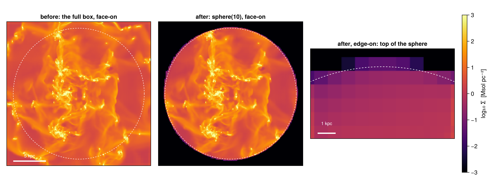
These three lines are the pattern of every cut on this page: a region, a result that works like the original data, and a number. The first two maps show what was cut out: the full box, and the sphere alone. Face-on, the edge follows the dashed circle, because the surface crosses small cells in the disc.
The third map looks at the top of the sphere from the side, far above the disc, where the cells are large. Here the edge is soft and steps over several pixels. The split was applied, but only to the numbers: each cut cell carries its inside fraction, and msum uses it. The map does not cut the cells. It draws each cut cell over its full area, with its reduced mass, so the edge looks as coarse as the cells it crosses (up to the cell size printed above the figure). Step 9 measures this and shows how to make the drawn edge sharp as well.
Change the radius to sphere(5.) and run the cell again. The number of cells drops much faster than the mass: the cut now goes through the refined, gas-rich disc, and most of the gas of this galaxy lies well inside 10 kpc.
Step 2. The five shapes
| shape | constructor | arguments | tilt |
|---|---|---|---|
| box | cuboid(xrange=[a, b], yrange=[c, d], zrange=[e, f]) | ranges, measured from the centre | no, aligned with the axes |
| cylinder | cylinder(r, h) | radius and half-height: the cylinder spans ±h | yes, axis= |
| sphere | sphere(r) | radius | not needed |
| spherical shell | sphericalshell(r_in, r_out) | inner and outer radius | not needed |
| cylindrical shell | cylindricalshell(r_in, r_out, h) | inner and outer radius, half-height | yes, axis= |
All five take center= and range_unit= (Step 3). The cylinder and the cylindrical shell also take axis=[x, y, z], which tilts them along any direction (Step 7). Note the half-height once and for all: cylinder(12., 2.) is 4 kpc thick.
The two shells have a second, classic form: shellregion(gas, :sphere; radius=[r_in, r_out]) and shellregion(gas, :cylinder; radius=[r_in, r_out], height=h). It keeps whole cells instead of splitting them, and its cylindrical shell runs along z only; Step 11 compares the two.
Below, each shape is cut with the default centre and unit and drawn twice: from the top (face-on, along z) and from the side (edge-on, along x). The first column shows the uncut data for comparison. The cylinder, named disc_region, is the galaxy disc in later steps.
# With no keywords, every shape is centred on the box and measured in kpc.
box_region = cuboid(xrange=[-12, 12], yrange=[-12, 12], zrange=[-2, 2])
disc_region = cylinder(12., 2.) # radius 12 kpc, half-height 2 kpc
ball_region = sphere(10.)
shell_region = sphericalshell(10., 20.) # inner radius, outer radius
ring_shape = cylindricalshell(6., 10., 2.) # inner radius, outer radius, half-height
shapes = [("cuboid", box_region),
("cylinder", disc_region),
("sphere", ball_region),
("sphericalshell", shell_region),
("cylindricalshell", ring_shape)]
cuts = [subregion(gas, r, verbose=false) for (_, r) in shapes]
for ((name, _), c) in zip(shapes, cuts)
println(rpad(name, 18), lpad(length(c.data), 9), " cells ",
round(msum(c, :Msol), sigdigits=4), " Msol")
end
disc = cuts[2] # the disc, used again later
m_disc = msum(disc, :Msol)
two_views(c) = (proj(c; xrange=[-21, 21], yrange=[-21, 21], pxsize=[0.2, :kpc]),
proj(c; direction=:x, yrange=[-21, 21], zrange=[-21, 21], pxsize=[0.2, :kpc]))
shape_maps = [two_views(gas); [two_views(c) for c in cuts]] # the uncut data first
panel_names = ["full box (uncut)"; first.(shapes)]
cuts = nothing
# ── figure code from here: panels, overlays, colorbars, no new Mera concepts ──
fig = Figure(size=(1300, 470))
for (k, (name, (pf, pe))) in enumerate(zip(panel_names, shape_maps))
show_sd!(Axis(fig[1, k], title=name), pf, (-21, 21, -21, 21))
show_sd!(Axis(fig[2, k]), pe, (-21, 21, -21, 21))
end
Label(fig[1, 0], "face-on", rotation=π/2, tellheight=false)
Label(fig[2, 0], "edge-on", rotation=π/2, tellheight=false)
scalebar!(content(fig[2, 1]), -19, -19.5, 10)
sd_bar!(fig[1:2, 7])
figcuboid 16714261 cells 2.63e10 Msol
cylinder 14591387 cells 2.283e10 Msol
sphere 11079571 cells 1.821e10 Msol
sphericalshell 7754688 cells 1.18e10 Msol
cylindricalshell 4084535 cells 8.032e9 Msol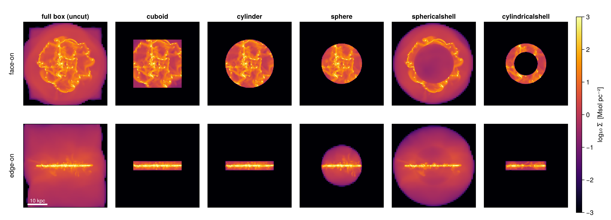
Face-on, the box and the cylinder differ only in the corners; edge-on, both are the same ±2 kpc slab. The two shells show how a projection hides depth. Face-on, the cylindrical shell is a ring with an empty middle, because its hole goes through its full height. The spherical shell is not empty in the middle: a line of sight through its hole still crosses the front and the back wall. Edge-on, the cylindrical shell looks like a solid slab for the same reason. The sphere of Step 1 is exactly the hole of the spherical shell.
Step 3. Placing a region: centre and units
center takes three values in range_unit, measured from the box corner. Any of them can be :bc for the box centre, so [13., :bc, :bc] means x = 13 kpc with the box centre in y and z. [:bc] alone is the box centre.
range_unit is the unit of the centre and of every size of the region: :kpc (the default for regions), :pc, :Mpc, :au, and more, or :standard for code units. info.scale lists all units.
The same sphere written in kpc and in pc selects the same gas. The centre can also come from the data, here from the centre of mass of the gas:
s_kpc = subregion(gas, sphere(10.; center=[13., :bc, :bc]), verbose=false)
s_pc = subregion(gas, sphere(10_000.; center=[13_000., :bc, :bc], range_unit=:pc), verbose=false)
println("sphere in kpc : ", round(msum(s_kpc, :Msol), sigdigits=8), " Msol")
println("same sphere in pc: ", round(msum(s_pc, :Msol), sigdigits=8), " Msol")
s_kpc = s_pc = nothing
com = center_of_mass(gas, :kpc) # (x, y, z) in kpc, measured from the box corner
core = subregion(gas, sphere(3.; center=collect(com)), verbose=false)
println("centre of mass : ", round.(com, digits=2), " kpc")
println("gas within 3 kpc : ", round(msum(core, :Msol), sigdigits=5), " Msol")
core = nothingsphere in kpc : 1.1953707e10 Msol
same sphere in pc: 1.1953707e10 Msol
centre of mass : (23.35, 23.82, 23.97) kpc
gas within 3 kpc : 4.4566e9 MsolRegion values like sphere(10.) default to the box centre and to kpc. The classic calls subregion(gas, :sphere; …) and shellregion(…) default to center=[0., 0., 0.], the box corner, and to code units. A classic sphere without center therefore sits on the corner, and only the eighth of it inside the box is kept. Mera prints a note when this happens. Step 11 covers the classic API.
Step 4. Boundary cells
A sphere has a smooth surface, but an AMR grid is made of cubes. So the surface cuts through cells, and what you do with these cut cells changes the result. There are three choices, and Mera offers all of them:
- Whole cells. Keep every cell that the surface touches, in full. This always gives too much: it is an upper bound.
- Centre test. Keep a cell in full if its centre is inside. Some cells count too much and others are lost, so the error can go either way.
- Split. Keep each cut cell with the part of its volume that lies inside. Mera stores this part in a
:fractioncolumn, and mass, volume and projections use it. This is the measurement. The other two show how large the boundary effect is.
The drawing below is not simulation data. It shows the three rules on a small grid with one refined corner, because on an AMR grid the same circle crosses cells of different sizes.
# ── ILLUSTRATION ONLY: this cell just DRAWS the split-cell schematic, no
# ── simulation data. Skim it if you trust the picture; the concepts resume
# ── in the next cell.
# a drawn 12×12 patch of an AMR grid (coarse 1-unit cells, one 2× refined
# quadrant) and one circular region, which cells does each treatment keep?
cells = Tuple{Float64,Float64,Float64}[] # (x0, y0, cell size)
for i in 0:11, j in 0:11
if i >= 6 && j >= 6 # the refined quadrant
for di in 0:1, dj in 0:1
push!(cells, (i + 0.5di, j + 0.5dj, 0.5))
end
else
push!(cells, (Float64(i), Float64(j), 1.0))
end
end
ccx, ccy, R = 5.7, 5.9, 4.3 # a circle grazing both mesh scales
inside(x, y) = (x - ccx)^2 + (y - ccy)^2 <= R^2
function insidefrac(x0, y0, s; n=32) # inside fraction by sub-sampling: what `nsub` does
hits = 0
for a in 1:n, b in 1:n
hits += inside(x0 + s*(a-0.5)/n, y0 + s*(b-0.5)/n)
end
return hits / n^2
end
F = [insidefrac(c...) for c in cells]
θ = range(0, 2π; length=181)
# ── figure code from here: panels, overlays, colorbars, no new Mera concepts ──
fig = Figure(size=(1080, 400))
titles = ("whole cells: every touched cell, entire",
"centre test: is the cell centre inside?",
"split: each cell weighted by its true fraction")
axs = [Axis(fig[1, k]; title=titles[k], aspect=DataAspect()) for k in 1:3]
foreach(hidedecorations!, axs)
for (k, ax) in enumerate(axs)
for (ci, (x0, y0, s)) in enumerate(cells)
keep = k == 2 ? inside(x0 + s/2, y0 + s/2) : F[ci] > 0
col = if !keep
:white
elseif k < 3 || F[ci] >= 1
RGBf(0.27, 0.47, 0.68) # counted in full
else
get(cgrad(:viridis), F[ci]) # boundary cell: weight = inside fraction
end
poly!(ax, Rect2f(x0, y0, s, s); color=col, strokecolor=:gray65, strokewidth=0.6)
end
lines!(ax, ccx .+ R .* cos.(θ), ccy .+ R .* sin.(θ); color=:red, linewidth=2)
end
let # centre dots near the rim of panel 2: filled = centre inside, hollow = outside
for (x0, y0, s) in cells
xm, ym = x0 + s/2, y0 + s/2
abs(sqrt((xm-ccx)^2 + (ym-ccy)^2) - R) < 1.4 || continue
scatter!(axs[2], [xm], [ym]; color=inside(xm, ym) ? :black : :white,
strokecolor=:black, strokewidth=0.8, markersize=5)
end
end
let # fraction labels on a few coarse boundary cells of panel 3
shown = 0
for (ci, (x0, y0, s)) in enumerate(cells)
if s == 1.0 && 0.1 < F[ci] < 0.95 && x0 < ccx && shown < 3
text!(axs[3], x0 + 0.5, y0 + 0.5; text=string(round(F[ci], digits=2)),
align=(:center, :center), fontsize=10, color=:white)
shown += 1
end
end
end
text!(axs[1], 0.3, 0.8; text="mostly-outside cells\nkept whole → over-count", fontsize=10, color=:black)
text!(axs[2], 0.3, 0.8; text="straddling cells\ndiscarded → under-count", fontsize=10, color=:black)
Colorbar(fig[1, 4]; colormap=:viridis, colorrange=(0, 1), label="volume fraction inside")
fig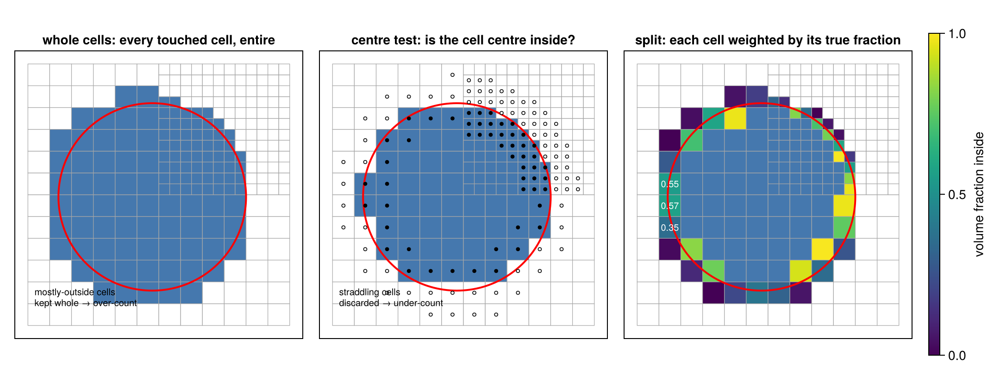
The errors are largest where the cells are large. In the refined corner the three panels almost agree.
Now the same three rules on real data. We place a 10 kpc sphere off centre, at x = 13 kpc, so its surface runs from small disc cells into large cells near the box edge. All three answers come from one cut. The split cut is the reference. split=false gives the centre test. The whole-cell answer is the split cut with its :fraction column removed, so that every touched cell counts in full. (The classic API offers the same two alternatives as cell=true and cell=false, see Step 11.)
ctr = [13., :bc, :bc] # x = 13 kpc; box centre in y and z
sph = subregion(gas, sphere(10.; center=ctr, range_unit=:kpc), verbose=false) # split
sph_centre = subregion(gas, sphere(10.; center=ctr, range_unit=:kpc);
split=false, verbose=false) # centre-inside cells, whole
# whole-cell mode = the split selection with its :fraction column removed:
cols_keep = Tuple(filter(!=(:fraction), propertynames(Mera.columns(sph.data))))
sph_whole = construct_datatype(Mera.select(sph.data, cols_keep), sph)
m_upper = msum(sph_whole, :Msol)
m_lower = msum(sph_centre, :Msol)
m_exact = msum(sph, :Msol)
println("gas mass inside r = 10 kpc:")
println(" whole cells (no :fraction) : ", round(m_upper, sigdigits=6), " Msol +",
round(100*(m_upper/m_exact - 1), sigdigits=3), " % vs split")
println(" centre test (split=false) : ", round(m_lower, sigdigits=6), " Msol ",
round(100*(m_lower/m_exact - 1), sigdigits=3), " % vs split")
println(" split (:fraction) : ", round(m_exact, sigdigits=6), " Msol reference")gas mass inside r = 10 kpc:
whole cells (no :fraction) : 1.19933e10 Msol +0.332 % vs split
centre test (split=false) : 1.19536e10 Msol -0.00125 % vs split
split (:fraction) : 1.19537e10 Msol referenceThe two differences are of different kinds. Whole cells are a strict upper bound: they hold the split selection with every cut cell at full weight, so they can only be larger. The centre test has no guaranteed sign: the cells it keeps count too much, the cells it drops count too little, and the two partly cancel. Both differences shrink on a finer grid, but at any resolution the split value is the one to quote.
How exact is the fraction? For a box aligned with the axes, Mera computes it exactly. For a curved surface it tests a grid of nsub × nsub × nsub points in each boundary cell (default nsub=8, so 512 points). A sphere has a known volume, (4/3)πR³, so we can measure the accuracy, and improve it with a larger nsub:
# volume error of a split sphere against (4/3)πR³, for several nsub, on two spheres:
# the off-centre 10 kpc sphere from above (its surface crosses mostly small cells)
# a 1.5 kpc sphere 8 kpc above the disc (its surface crosses only large cells)
spheres = [("r = 10 kpc, off centre", sphere(10.; center=ctr), 10.0),
("r = 1.5 kpc, above the disc", sphere(1.5; center=[:bc, :bc, 32.]), 1.5)]
nsubs = [1, 2, 4, 8, 16, 32]
err = Dict(name => Float64[] for (name, _, _) in spheres)
tsec = Float64[]
for n in nsubs, (name, reg, R) in spheres
t = @elapsed cut = subregion(gas, reg; nsub=n, verbose=false)
push!(err[name], 100 * (sum(getvar(cut, :volume, :kpc3)) / (4π/3 * R^3) - 1))
R == 10.0 && push!(tsec, t)
end
println(rpad("nsub", 6), rpad("points/cell", 13), lpad("r = 10 kpc", 13), lpad("r = 1.5 kpc", 14), lpad("time, r = 10", 15))
for (k, n) in enumerate(nsubs)
println(rpad(n, 6), rpad(n^3, 13),
lpad(string(round(err[spheres[1][1]][k], sigdigits=2), " %"), 13),
lpad(string(round(err[spheres[2][1]][k], sigdigits=2), " %"), 14),
lpad(string(round(tsec[k], digits=2), " s"), 15))
end
# ── figure code from here: panels, overlays, colorbars, no new Mera concepts ──
fig = Figure(size=(960, 340))
ax1 = Axis(fig[1, 1], xscale=log2, yscale=log10, xticks=nsubs, xlabel="nsub",
ylabel="|volume error| [%]", title="accuracy")
for (name, _, _) in spheres
scatterlines!(ax1, nsubs, max.(abs.(err[name]), 1e-5); label=name)
end
hlines!(ax1, [0.01]; color=:gray, linestyle=:dash)
axislegend(ax1; position=:lb, framevisible=false)
ax2 = Axis(fig[1, 2], xscale=log2, xticks=nsubs, xlabel="nsub", ylabel="time [s]",
title="cost, r = 10 kpc")
scatterlines!(ax2, nsubs, tsec)
fignsub points/cell r = 10 kpc r = 1.5 kpc time, r = 10
1 1 -0.025 % 19.0 % 0.33 s
2 8 -0.096 % 3.0 % 0.25 s
4 64 -0.026 % 0.9 % 0.22 s
8 512 -0.0046 % 0.23 % 0.37 s
16 4096 -0.00025 % 0.053 % 0.36 s
32 32768 -0.00036 % 0.01 % 1.21 s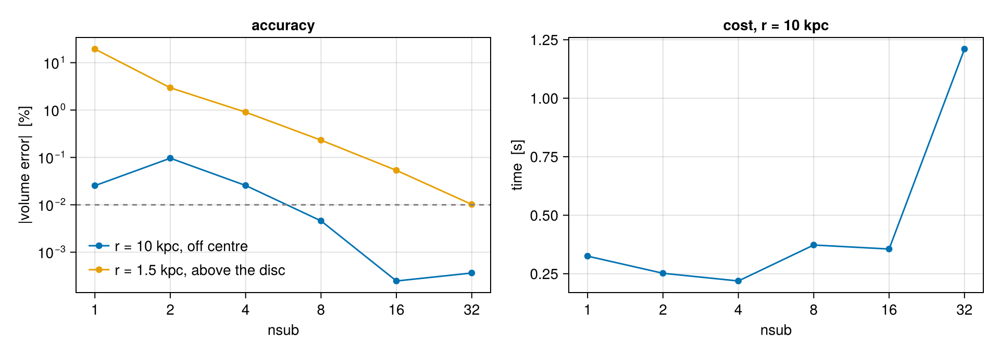
How to choose nsub. nsub=1 tests only the cell centre, so it is the centre test again. From there the error falls quickly. What sets it is the size of the cut cells compared with the region:
- For the 10 kpc sphere, the surface crosses mostly small cells, and the default
nsub=8is already below a hundredth of a per cent (dashed line). Atnsub=1and2the errors of the single cells are large and cancel partly by chance, so the first points do not fall steadily. - For the small sphere above the disc, the surface crosses a few dozen cells as large as half the radius. Each of them holds a large part of the volume, so the same
nsubgives a much larger error: 0.23 % at the default, and onlynsub=32reaches a hundredth of a per cent.
The time hardly changes up to nsub=16, because most of the work is the selection itself, not the sampling. At nsub=32, with 32 768 points per boundary cell, it starts to grow. A practical rule:
- Keep the default
nsub=8for normal work. - Compare the region with the cells on its boundary:
maximum(getvar(cut, :cellsize, :kpc)). If the region is only a few cells across, usensub=16or32. - When the last digits matter, check as here: cut a sphere or cylinder of the same size at the same place and compare its volume with the exact value. A box aligned with the axes needs no check: its fractions are exact for any
nsub.
Now the maps. The second row zooms onto the coarse west edge, because at full size the differences are smaller than a screen pixel. The dashed circle is the exact sphere.
zoomw = (center=ctr, xrange=[-12, 12], yrange=[-12, 12], pxsize=[0.1, :kpc])
p_up = proj(sph_whole; zoomw...)
p_sp = proj(sph; zoomw...)
p_lo = proj(sph_centre; zoomw...)
# The rim spans about 1.8 dex, while the page-wide scale spans 6. Measured across this
# window the three treatments differ from the split map by 15 % (whole) and 3 % (centres),
# which is 0.06 and 0.01 dex: about 1 % of a six-decade colour bar, and invisible. The zoom
# row therefore gets its own stretch, taken from the rim's own values.
ZLIM = (-1.8, 0.4)
# ── figure code from here: panels, overlays, colorbars, no new Mera concepts ──
fig = Figure(size=(1080, 700))
L = (-12, 12, -12, 12)
Lz = (-11, -7, -2, 2) # the coarse west rim
panels = ((p_up, "whole cells: bulges outward"),
(p_sp, "split: edge on the circle"),
(p_lo, "centres only: eroded inward"))
for (k, (p, ttl)) in enumerate(panels)
ax = Axis(fig[1, k], title=ttl)
show_sd!(ax, p, L)
arc!(ax, Point2f(0, 0), 10., 0, 2π; color=:white, linewidth=1, linestyle=:dash)
lines!(ax, [-11, -7, -7, -11, -11], [-2, -2, 2, 2, -2]; color=:cyan, linewidth=1)
axz = Axis(fig[2, k], title=k == 2 ? "zoom: the coarse west rim (own colour range)" : "")
show_sd!(axz, p, Lz; lims=ZLIM)
arc!(axz, Point2f(0, 0), 10., 0, 2π; color=:white, linewidth=1.2, linestyle=:dash)
end
scalebar!(content(fig[1, 1]), -11, -11.2, 5)
sd_bar!(fig[1, 4])
Colorbar(fig[2, 4]; colormap=:inferno, colorrange=ZLIM, label="log₁₀ Σ (zoom)")
fig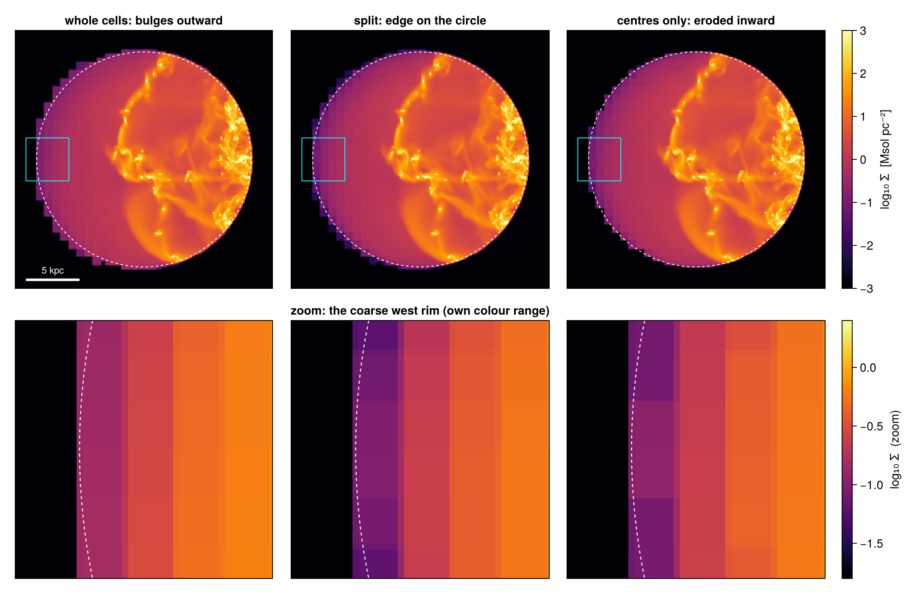
In the zoom, the three rules of the drawing appear on real data: whole cells stick out past the circle, the centre test cuts into it, and the split edge lies on it. The split edge is a little soft, because the projection spreads the (correctly reduced) mass of each cut cell over the whole cell. Step 9 measures this and shows how to make the edge sharp.
The zoom row has its own colour range. On the page-wide scale of six decades, a difference of a few per cent would be invisible.
Next, the fractions themselves. We take the boundary cells of the split sphere (0 < fraction < 1) in a thin slab around the mid-plane and colour each cell by its fraction. The marker size follows the cell size.
cs = getvar(sph, :cellsize, :kpc)
xr = getvar(sph, :x, :kpc) .- 13. # cell centres relative to the sphere centre
yr = getvar(sph, :y, :kpc) .- 24. # (x = 13, y = z = 24 kpc)
zr = getvar(sph, :z, :kpc) .- 24.
f = Mera.select(sph.data, :fraction)
sel = (f .< 1.0) .& (abs.(zr) .< 1.) # boundary cells in a thin mid-plane slab
# ── figure code from here: panels, overlays, colorbars, no new Mera concepts ──
fig = Figure(size=(640, 520))
ax = Axis(fig[1, 1], title="boundary cells, |z| < 1 kpc: marker size ∝ cell size",
xlabel="x − x꜀ [kpc]", ylabel="y − y꜀ [kpc]", aspect=DataAspect())
sc = scatter!(ax, xr[sel], yr[sel]; color=f[sel], colormap=:viridis,
colorrange=(0, 1), markersize=16 .* cs[sel])
lines!(ax, 10 .* cos.(θ), 10 .* sin.(θ); color=:black, linewidth=1, linestyle=:dash)
text!(ax, -9.4, 6.5; text="coarse cells", color=:gray30, fontsize=11)
text!(ax, 5.2, -8.6; text="fine cells", color=:gray30, fontsize=11)
Colorbar(fig[1, 2], sc, label="volume fraction inside")
fig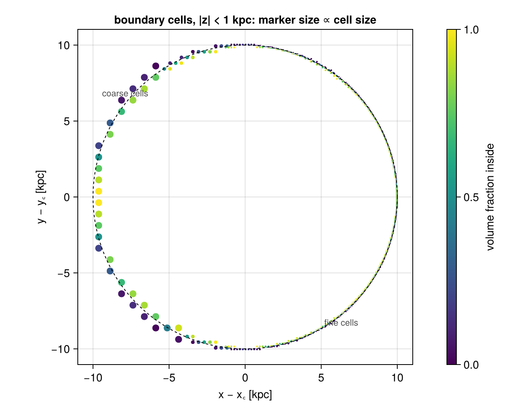
The fractions lie on both sides of the circle, as in the drawing. Toward the galaxy (lower right) the circle crosses many small cells; toward the box edge (upper left) it crosses a few large ones. These few large cells cause the differences above.
Where the grid is coarse. A small sphere high above the disc, where the grid was never refined, shows how large the effect can get:
ctr_c = [:bc, :bc, 32.] # 8 kpc above the plane: coarse mesh
sph_c = subregion(gas, sphere(1.5; center=ctr_c, range_unit=:kpc), verbose=false)
sph_cc = subregion(gas, sphere(1.5; center=ctr_c, range_unit=:kpc); split=false, verbose=false)
cols_c = Tuple(filter(!=(:fraction), propertynames(Mera.columns(sph_c.data))))
sph_cw = construct_datatype(Mera.select(sph_c.data, cols_c), sph_c)
mc_u, mc_l, mc_e = msum(sph_cw, :Msol), msum(sph_cc, :Msol), msum(sph_c, :Msol)
println("gas mass inside r = 1.5 kpc, 8 kpc above the plane:")
println(" whole cells : +", round(100*(mc_u/mc_e - 1), sigdigits=3), " % vs split")
println(" centre test : ", round(100*(mc_l/mc_e - 1), sigdigits=3), " % vs split")
println(" split : ", round(mc_e, sigdigits=5), " Msol reference (",
length(sph_c.data), " cells, largest ",
round(maximum(getvar(sph_c, :cellsize, :kpc)), digits=3), " kpc)")gas mass inside r = 1.5 kpc, 8 kpc above the plane:
whole cells : +93.3 % vs split
centre test : 19.1 % vs split
split : 560090.0 Msol reference (66 cells, largest 0.75 kpc)Here the surface crosses a few dozen cells that are about as large as the region itself, and the whole-cell and centre-test masses move far away from the split value. The error of a whole-cell cut depends on the cell size at the boundary, not on the overall resolution of the run. Whenever you cut something small, or something far from the refined regions, compare the three numbers before you trust a whole-cell result.
Step 5. Inside and outside
Every region has an inverse: everything else in the box. inverse=true selects it. The fractions flip too (fraction → 1 − fraction), so a cut cell is shared between the region and its inverse. Nothing is counted twice and nothing is lost: region and inverse together are exactly the whole box.
We use the centre of the disc, a cylinder with a radius of 4 kpc and a half-height of 2 kpc.
A hint for maps: a hole is hard to see in a projection through the whole 48 kpc box, because the line of sight still passes the gas in front of and behind it. To see a hole, limit the depth of the projection to the region, here with zrange=[-2, 2].
nucleus_region = cylinder(4., 2.; center=[:bc], range_unit=:kpc)
nucleus = subregion(gas, nucleus_region, verbose=false)
anti = subregion(gas, nucleus_region; inverse=true, verbose=false)
m_nuc, m_anti, m_tot = msum(nucleus, :Msol), msum(anti, :Msol), msum(gas, :Msol)
println("nucleus zone : ", round(m_nuc, sigdigits=6), " Msol")
println("nucleus + inverse : ", round(m_nuc + m_anti, sigdigits=8), " Msol")
println("whole box : ", round(m_tot, sigdigits=8), " Msol")
println("relative imbalance : ", round((m_nuc + m_anti)/m_tot - 1, sigdigits=2))
pn = proj(nucleus; xrange=[-13, 13], yrange=[-13, 13], zrange=[-2, 2], pxsize=[0.1, :kpc])
pa = proj(anti; xrange=[-13, 13], yrange=[-13, 13], zrange=[-2, 2], pxsize=[0.1, :kpc])
# ── figure code from here: panels, overlays, colorbars, no new Mera concepts ──
fig = Figure(size=(880, 440))
Ln = (-13, 13, -13, 13)
ax1 = Axis(fig[1, 1], title="nucleus zone (±2 kpc slab)")
ax2 = Axis(fig[1, 2], title="inverse=true: everything else (±2 kpc slab)")
show_sd!(ax1, pn, Ln); show_sd!(ax2, pa, Ln)
for ax in (ax1, ax2)
arc!(ax, Point2f(0, 0), 4., 0, 2π; color=:white, linewidth=1, linestyle=:dash)
end
sd_bar!(fig[1, 3])
fignucleus zone : 5.93727e9 Msol
nucleus + inverse : 3.0400672e10 Msol
whole box : 3.0400672e10 Msol
relative imbalance : 0.0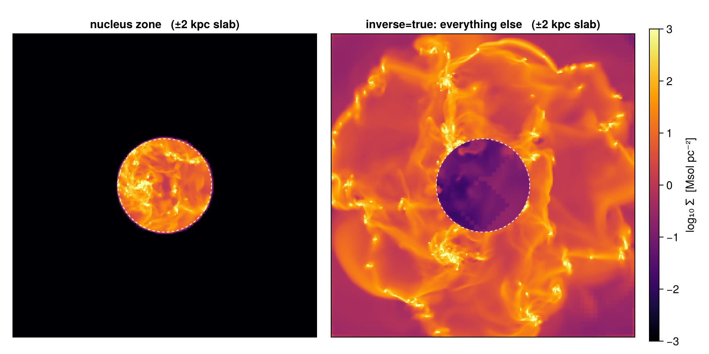
The two maps are exact complements, and the two masses add up to the box total. The hole is not completely black: the remaining parts of the cut cells are drawn over their full cell size (Step 9 explains this). The masses are exact regardless.
!region means the same as inverse=true, written as part of the region. This is useful inside combinations (Step 6):
anti2 = subregion(gas, !nucleus_region, verbose=false)
println("!region : ", round(msum(anti2, :Msol), sigdigits=8), " Msol")
println("inverse=true : ", round(m_anti, sigdigits=8), " Msol")
anti2 = nothing!region : 2.4463406e10 Msol
inverse=true : 2.4463406e10 MsolStep 6. Combining regions
Regions combine with set operators, nested as deep as you like, and each part can have its own centre. Boundary cells keep their fractions in every combination; for curved surfaces they are sampled with nsub as in Step 4.
| operator | ASCII form | function | selects |
|---|---|---|---|
A ∩ B | A & B | intersect(A, B) | inside both |
A ∪ B | A | B | union(A, B) | inside at least one |
A \ B | setdiff(A, B) | inside A but not inside B | |
!A | outside A |
In the Julia REPL, Jupyter and VS Code, type \cup and press TAB to get ∪, or \cap and TAB to get ∩. The ASCII forms in the table work everywhere.
A common case is the disc without the bulge. The bulge sphere (radius 4 kpc) reaches above and below the ±2 kpc disc, so the mass it removes from the disc is the mass of disc ∩ sphere, not the mass of the full sphere. The algebra keeps track of this:
bulge_sphere = sphere(4.; center=[:bc], range_unit=:kpc)
clean_disc = subregion(gas, disc_region \ bulge_sphere, verbose=false)
overlap = subregion(gas, disc_region ∩ bulge_sphere, verbose=false)
m_clean = msum(clean_disc, :Msol)
m_olap = msum(overlap, :Msol)
println("disc \\ sphere : ", round(m_clean, sigdigits=6), " Msol")
println("disc ∩ sphere : ", round(m_olap, sigdigits=6), " Msol")
println("sum : ", round(m_clean + m_olap, sigdigits=8),
" vs disc: ", round(m_disc, sigdigits=8), " Msol")
pc1 = proj(clean_disc; xrange=[-13, 13], yrange=[-13, 13], pxsize=[0.1, :kpc])
pc2 = proj(clean_disc; direction=:x, xrange=[-3, 3], yrange=[-13, 13], zrange=[-4, 4],
pxsize=[0.1, :kpc]) # depth-restricted: the bite is visible
# ── figure code from here: panels, overlays, colorbars, no new Mera concepts ──
fig = Figure(size=(760, 560))
ax1 = Axis(fig[1, 1], title="disc \\ sphere, face-on")
show_sd!(ax1, pc1, (-13, 13, -13, 13))
arc!(ax1, Point2f(0, 0), 4., 0, 2π; color=:white, linewidth=1, linestyle=:dash)
ax2 = Axis(fig[2, 1], title="edge-on, ±3 kpc slab: the lens-shaped bite")
show_sd!(ax2, pc2, (-13, 13, -4, 4))
arc!(ax2, Point2f(0, 0), 4., 0, 2π; color=:white, linewidth=1, linestyle=:dash)
for zpl in (-2., 2.)
lines!(ax2, [-13., 13.], [zpl, zpl]; color=:cyan, linewidth=1, linestyle=:dash)
end
sd_bar!(fig[:, 2])
figdisc \ sphere : 1.69318e10 Msol
disc ∩ sphere : 5.90283e9 Msol
sum : 2.2834624e10 vs disc: 2.2834625e10 Msol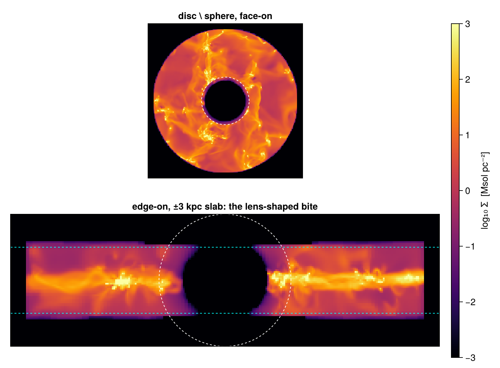
Difference and intersection split the disc into two parts, and their masses add up to the disc mass. The side view is limited to a ±3 kpc slab, so the bite of the sphere shows as a dark lens between the dashed faces of the disc.
Any number of parts can be combined. Below, the disc joined with a 5 kpc "companion" sphere, minus two holes, in one expression, each part with its own centre:
sculpture = (disc_region ∪ sphere(5.; center=[33., :bc, :bc], range_unit=:kpc)) \
(sphere(2.5; center=[18., :bc, :bc], range_unit=:kpc) ∪
sphere(2.5; center=[30., :bc, :bc], range_unit=:kpc))
carve = subregion(gas, sculpture, verbose=false)
println("sculpture gas mass: ", round(msum(carve, :Msol), sigdigits=6), " Msol")
ps = proj(carve; xrange=[-16, 16], yrange=[-16, 16], pxsize=[0.1, :kpc])
# ── figure code from here: panels, overlays, colorbars, no new Mera concepts ──
fig = Figure(size=(640, 520))
ax = Axis(fig[1, 1], title="(disc ∪ companion) \\ two holes")
show_sd!(ax, ps, (-16, 16, -16, 16))
text!(ax, 9.0, 5.6; text="companion", color=:cyan, fontsize=11, align=(:center, :bottom))
text!(ax, -6.5, -13.6; text="left hole: drills through\nthe whole ±2 kpc slab", color=:cyan,
fontsize=10, align=(:center, :top))
text!(ax, 8.5, -13.6; text="right hole: companion gas\nremains behind it", color=:cyan,
fontsize=10, align=(:center, :top))
scalebar!(ax, -15, 14.6, 5)
sd_bar!(fig[1, 2])
figsculpture gas mass: 2.25759e10 Msol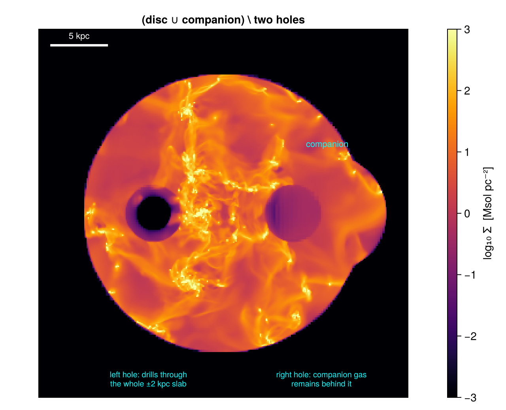
The left hole is black: its radius (2.5 kpc) is larger than the half-height of the disc (2 kpc), so it goes through the whole disc. The right hole lies inside the companion sphere, which is thicker than the hole along the line of sight, so gas in front of and behind the hole remains. Reading the projection of a 3-D shape always needs this kind of depth reasoning.
The @region block. Long combinations get hard to read when every part repeats center= and range_unit=. Inside @region, every constructor that does not set them itself gets the unit and center of the block. Assignments name the parts, and the last line is the result: an ordinary region, the same as the operator form.
sculpture2 = @region unit=:kpc center=[:bc] begin
disc = cylinder(12., 2.)
companion = sphere(5.; center=[33., :bc, :bc])
holeL = sphere(2.5; center=[18., :bc, :bc])
holeR = sphere(2.5; center=[30., :bc, :bc])
(disc ∪ companion) \ (holeL ∪ holeR)
end
carve2 = subregion(gas, sculpture2, verbose=false)
println("identical to the operator form : ", msum(carve2, :Msol) == msum(carve, :Msol))identical to the operator form : trueBecause the fractions pass through every operator, the rules of set algebra also hold for the numbers. Here the rule vol(A ∪ B) = vol(A) + vol(B) − vol(A ∩ B), for the disc A and the companion B:
A = disc_region
B = sphere(5.; center=[33., :bc, :bc], range_unit=:kpc)
volk(r) = sum(getvar(subregion(gas, r, verbose=false), :volume, :kpc3))
vA, vB, vAB, vAuB = volk(A), volk(B), volk(A ∩ B), volk(A ∪ B)
println("vol(A) + vol(B) − vol(A ∩ B) = ", round(vA + vB - vAB, sigdigits=6), " kpc³")
println("vol(A ∪ B) = ", round(vAuB, sigdigits=6), " kpc³")vol(A) + vol(B) − vol(A ∩ B) = 2082.22 kpc³
vol(A ∪ B) = 2082.22 kpc³Cutting a cut. subregion also works on an object that was already cut by a region. The fractions then multiply. This is exact for every cell that only one of the two surfaces passes through. For the few cells that both surfaces pass through it is an approximation, and Mera prints a hint. For the exact result, combine the regions first:
disc_then_ball = subregion(disc, bulge_sphere, verbose=false) # a cut of a cut
disc_and_ball = subregion(gas, disc_region ∩ bulge_sphere, verbose=false)
m_chain, m_and = msum(disc_then_ball, :Msol), msum(disc_and_ball, :Msol)
println("disc, then sphere : ", round(m_chain, sigdigits=8), " Msol")
println("disc ∩ sphere : ", round(m_and, sigdigits=8), " Msol")
println("relative diff. : ", round(m_chain / m_and - 1, sigdigits=2))
disc_then_ball = disc_and_ball = nothingdisc, then sphere : 5.9028068e9 Msol
disc ∩ sphere : 5.9028314e9 Msol
relative diff. : -4.2e-6A cylindrical shell can also be written with the algebra: cylinder(10., 2.) \ cylinder(6., 2.) is the same ring as cylindricalshell(6., 10., 2.). Cut both and compare msum. The shell computes its fractions in one pass, but both should agree to the sampling accuracy of Step 4.
Step 7. Tilted regions
Structures in a simulation are rarely aligned with the grid. cylinder and cylindricalshell take any 3-vector as axis; it does not need to be normalised. (The classic :cylinder is always along z.) A map flattens the third dimension, so before cutting anything tilted, it helps to draw the geometry once:
using LinearAlgebra
a = normalize([1., 0., 2.]) # cylinder axis, tipped toward +x
e1 = normalize(cross([0., 0., 1.], a)) # ⊥ a
e2 = normalize(cross(a, e1)) # completes the orthonormal basis
θ3 = range(0, 2π; length=121)
# ── figure code from here: panels, overlays, colorbars, no new Mera concepts ──
fig = Figure(size=(700, 560))
ax = Axis3(fig[1, 1]; aspect=:data, azimuth=0.9, elevation=0.25,
title="a tilted cylinder through the disc: the geometry")
for zpl in (-2., 2.) # the ±2 kpc disc slab: top and bottom faces
lines!(ax, 12 .* cos.(θ3), 12 .* sin.(θ3), fill(zpl, 121); color=:gray60)
end
for φ in range(0, 2π; length=9)[1:8] # vertical strokes joining the faces
lines!(ax, fill(12cos(φ), 2), fill(12sin(φ), 2), [-2., 2.]; color=:gray80)
end
for s in (-1., 1.) # the tilted cylinder: rims at ±1 kpc along its axis
rim = [s .* a .+ 10. .* (cos(t) .* e1 .+ sin(t) .* e2) for t in θ3]
lines!(ax, getindex.(rim, 1), getindex.(rim, 2), getindex.(rim, 3);
color=:cyan, linewidth=1.5)
end
lines!(ax, [-6a[1], 6a[1]], [-6a[2], 6a[2]], [-6a[3], 6a[3]]; color=:teal, linewidth=2)
text!(ax, Point3f(6.6a[1], 0, 6.6a[3]); text="cylinder axis [1, 0, 2]", color=:teal, fontsize=11)
lines!(ax, [0., 0.], [0., 0.], [-6., 6.]; color=:black, linewidth=1)
text!(ax, Point3f(0, 0, 6.5); text="disc normal (z)", color=:black, fontsize=11)
fig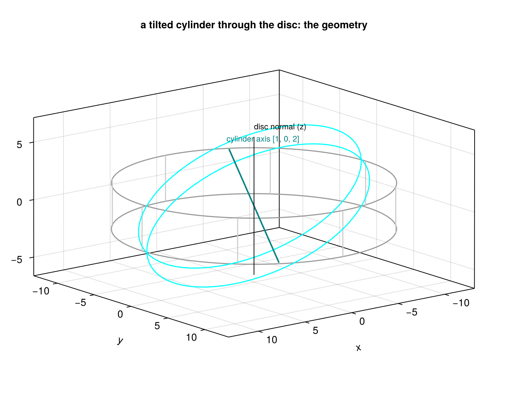
Now the cut: cylinder(10., 1.; axis=[1., 0., 2.]), a thin slab tilted toward +x. Two checks show that the tilt costs nothing. The volume matches the exact value πR²·2h, which does not depend on the orientation. And two views tell the same story: along z the tilt shows only as a soft ellipse, along y it shows as what it is, an inclined bar. To look along the tilted axis instead of only cutting along it, use the off-axis projection.
tilt_region = cylinder(10., 1.; axis=[1., 0., 2.], center=[:bc], range_unit=:kpc)
tilted = subregion(gas, tilt_region, verbose=false)
v_tilt = sum(getvar(tilted, :volume, :kpc3))
v_ana = π * 10.0^2 * 2.0
println("tilted-cylinder gas mass : ", round(msum(tilted, :Msol), sigdigits=6), " Msol")
println("volume : ", round(v_tilt, sigdigits=6), " kpc³ vs πR²·2h = ",
round(v_ana, sigdigits=6), " kpc³ (", round(100*(v_tilt/v_ana - 1), sigdigits=2), " %)")
pt1 = proj(tilted; xrange=[-13, 13], yrange=[-13, 13], pxsize=[0.1, :kpc])
pt2 = proj(tilted; direction=:y, xrange=[-13, 13], zrange=[-7, 7], pxsize=[0.1, :kpc])
# ── figure code from here: panels, overlays, colorbars, no new Mera concepts ──
fig = Figure(size=(920, 440))
ax1 = Axis(fig[1, 1], title="seen along z: an ellipse with softened rims")
show_sd!(ax1, pt1, (-13, 13, -13, 13))
ax2 = Axis(fig[1, 2], title="seen along y: the inclined bar it actually is")
show_sd!(ax2, pt2, (-13, 13, -7, 7))
lines!(ax2, [0., 3.5a[1]], [0., 3.5a[3]]; color=:cyan, linewidth=1.5)
text!(ax2, 3.5a[1] + 0.5, 3.5a[3]; text="cylinder axis", color=:cyan, fontsize=11,
align=(:left, :center))
sd_bar!(fig[1, 3])
figtilted-cylinder gas mass : 5.43585e9 Msol
volume : 628.848 kpc³ vs πR²·2h = 628.319 kpc³ (0.084 %)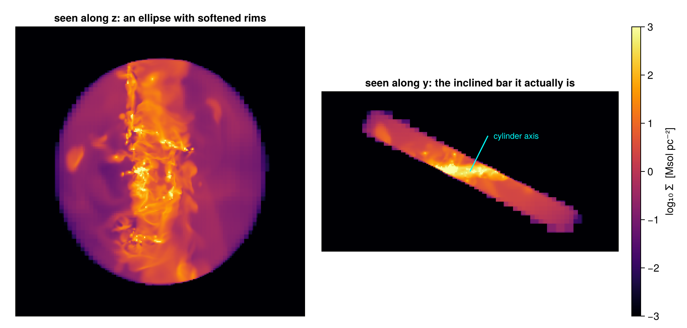
The volume matches the exact value to the usual sampling accuracy. The two views repeat the depth lesson of Step 6: the same selection can look like a blur or like a bar, depending on the direction of view.
Shells tilt as well: cylindricalshell takes the same axis. For a tilted shape the natural view is along its own axis, which the off-axis projection gives directly (los= takes the same vector). Three views of one tilted ring: from the top it is an elliptical ring, along its own axis it is the circular ring it really is, and from the side (along y) it shows its tilt. As a second check, an in-plane bar, a thin cylinder whose axis lies in the disc plane, with the volume checks for both:
tshell_region = cylindricalshell(6., 10., 1.; axis=[1., 0., 2.], center=[:bc], range_unit=:kpc)
tshell = subregion(gas, tshell_region, verbose=false)
v_ts = sum(getvar(tshell, :volume, :kpc3))
v_up = sum(getvar(subregion(gas, cylindricalshell(6., 10., 1.; center=[:bc], range_unit=:kpc),
verbose=false), :volume, :kpc3))
println("tilted shell volume : ", round(v_ts, sigdigits=6), " kpc³ upright: ",
round(v_up, sigdigits=6), " kpc³ analytic π(R²−r²)·2h = ",
round(π*(100-36)*2, sigdigits=6), " kpc³")
bar_region = cylinder(4., 1.2; axis=[cosd(25.), sind(25.), 0.], center=[:bc], range_unit=:kpc)
bar = subregion(gas, bar_region, verbose=false)
println("in-plane bar volume : ", round(sum(getvar(bar, :volume, :kpc3)), sigdigits=6),
" kpc³ analytic πR²·2h = ", round(π*16*2.4, sigdigits=6), " kpc³")
pt_f = proj(tshell; xrange=[-12, 12], yrange=[-12, 12], pxsize=[0.1, :kpc])
pt_a = projection(tshell, :sd, :Msol_pc2; los=[1., 0., 2.], center=[:bc], range_unit=:kpc,
pxsize=[0.1, :kpc], verbose=false, show_progress=false)
pt_e = proj(tshell; direction=:y, xrange=[-12, 12], zrange=[-8, 8], pxsize=[0.1, :kpc])
pb = proj(bar; xrange=[-6, 6], yrange=[-6, 6], pxsize=[0.05, :kpc])
# ── figure code from here: panels, overlays, colorbars, no new Mera concepts ──
fig = Figure(size=(1180, 760))
ax1 = Axis(fig[1, 1], title="tilted ring along z: an elliptical annulus")
show_sd!(ax1, pt_f, (-12, 12, -12, 12))
ax2 = Axis(fig[1, 2], title="along its own axis (los = [1, 0, 2]): a circle again")
show_sd!(ax2, pt_a)
for r in (6., 10.)
arc!(ax2, Point2f(0, 0), r, 0, 2π; color=:white, linewidth=1, linestyle=:dash)
end
ax3 = Axis(fig[2, 1], title="along y: the inclination, explicit")
show_sd!(ax3, pt_e, (-12, 12, -8, 8))
ax4 = Axis(fig[2, 2], title="in-plane bar (axis 25° in the disc plane), face-on")
show_sd!(ax4, pb, (-6, 6, -6, 6))
sd_bar!(fig[:, 3])
figtilted shell volume : 402.739 kpc³ upright: 403.265 kpc³ analytic π(R²−r²)·2h = 402.124 kpc³
in-plane bar volume : 120.595 kpc³ analytic πR²·2h = 120.637 kpc³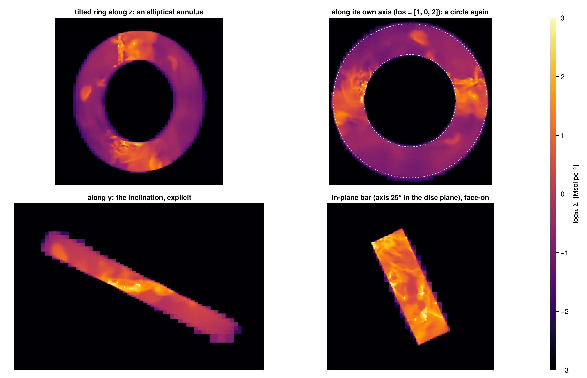
In the view along the axis, the dashed exact circles at 6 and 10 kpc lie on the edges of the ring: cutting along a vector and looking along the same vector fit together. Both tilted volumes agree with their upright versions and with the exact values.
Step 8. A mass budget that balances
Now the tools answer one question: how is the gas of this galaxy distributed? We cut the disc into zones and check that their masses add up to the disc mass.
On an AMR grid this does not happen by itself. Zones that overlap, or leave gaps, give a table that does not add up, and nothing in the table warns you. Split regions that touch share each boundary cell through complementary fractions, so their sum must close.
The plan, drawn on the data. Face-on: the nucleus (r < 4 kpc), the inner zone (4 to 6 kpc), the ring (6 to 10 kpc) and the rim (10 to 12 kpc), all within the ±2 kpc disc, and in orange the off-centre sphere of Step 4. Edge-on: the disc slab and the 10 to 20 kpc envelope, which we measure outside the budget.
p_face = proj(gas) # full box, face-on (z)
p_edge = proj(gas; direction=:x) # full box, edge-on
# ── figure code from here: panels, overlays, colorbars, no new Mera concepts ──
fig = Figure(size=(1000, 480))
axf = Axis(fig[1, 1], title="face-on: the dissection plan",
xlabel="x − x꜀ [kpc]", ylabel="y − y꜀ [kpc]")
show_sd!(axf, p_face; decorate=true)
arc!(axf, Point2f(0, 0), 4., 0, 2π; color=:cyan, linewidth=1.5)
arc!(axf, Point2f(0, 0), 6., 0, 2π; color=:cyan, linewidth=1.2, linestyle=:dash)
arc!(axf, Point2f(0, 0), 10., 0, 2π; color=:cyan, linewidth=1.2, linestyle=:dash)
arc!(axf, Point2f(0, 0), 12., 0, 2π; color=:cyan, linewidth=1.5)
text!(axf, 0.0, 4.4; text="nucleus", color=:cyan, fontsize=11, align=(:center, :bottom))
text!(axf, 5.9, 5.9; text="ring 6–10", color=:cyan, fontsize=11)
text!(axf, 9.2, -9.8; text="disc rim 12", color=:cyan, fontsize=11)
arc!(axf, Point2f(-11, 0), 10., 0, 2π; color=:orange, linewidth=1.5, linestyle=:dot)
text!(axf, -21.5, 10.6; text="sphere of Step 4", color=:orange, fontsize=11)
axe = Axis(fig[1, 2], title="edge-on: disc slab and envelope",
xlabel="y − y꜀ [kpc]", ylabel="z − z꜀ [kpc]")
show_sd!(axe, p_edge; decorate=true)
lines!(axe, [-12., 12., 12., -12., -12.], [-2., -2., 2., 2., -2.]; color=:cyan, linewidth=1.5)
text!(axe, -11.5, 2.6; text="disc slab |z| ≤ 2", color=:cyan, fontsize=11)
arc!(axe, Point2f(0, 0), 10., 0, 2π; color=:orange, linewidth=1.2, linestyle=:dash)
arc!(axe, Point2f(0, 0), 20., 0, 2π; color=:orange, linewidth=1.2, linestyle=:dash)
text!(axe, 7.2, 17.5; text="envelope 10–20", color=:orange, fontsize=11)
sd_bar!(fig[1, 3])
fig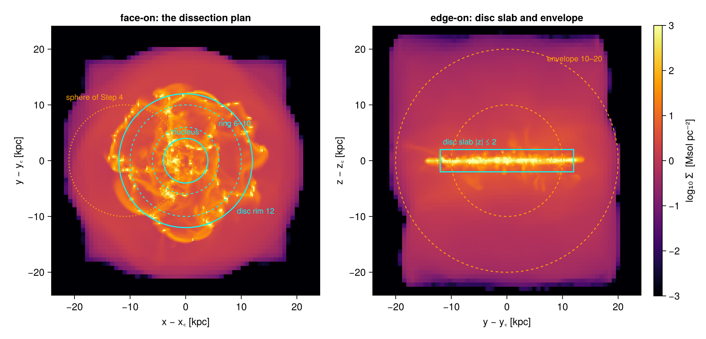
The disc. We cut disc_region from Step 2 twice, split and with split=false, to see the lesson of Step 4 on a real structure:
disc_region = cylinder(12., 2.; center=[:bc], range_unit=:kpc) # radius, half-height
disc = subregion(gas, disc_region, verbose=false) # split boundary cells
disc_whole = subregion(gas, disc_region; split=false, verbose=false) # centre test
m_disc = msum(disc, :Msol)
m_discw = msum(disc_whole, :Msol)
println("disc gas mass (r < 12 kpc, |z| < 2 kpc):")
println(" split : ", round(m_disc, sigdigits=6), " Msol")
println(" split=false : ", round(m_discw, sigdigits=6), " Msol (",
round(100*(m_discw/m_disc - 1), sigdigits=3), " %)")disc gas mass (r < 12 kpc, |z| < 2 kpc):
split : 2.28346e10 Msol
split=false : 2.28475e10 Msol (0.0563 %)The difference is tiny here: the mid-plane of the disc is highly refined, so the surface crosses small cells almost everywhere. Where the choice matters is above the plane: seen from the side, the flat faces of the cylinder at z = ±2 kpc (dashed) cut through the larger cells of the thick gas layer.
The first two panels show the honest result: the two masses differ by less than a tenth of a per cent, and on a six-decade colour scale the maps look the same. This is the usual case, and it is why Step 4 argues with numbers rather than with pictures. The third panel subtracts the two maps. The difference is not spread over the disc: it is a thin band on the two faces, where the split cut keeps the inside part of each cut cell and the centre test keeps or drops the whole cell.
p3 = proj(disc; direction=:x, yrange=[-14, 14], zrange=[-4, 4], pxsize=[0.1, :kpc])
p4 = proj(disc_whole; direction=:x, yrange=[-14, 14], zrange=[-4, 4], pxsize=[0.1, :kpc])
# The two maps differ by 0.06 % in mass: far too little to see against a six-decade
# colour scale. Subtracting them puts the disagreement where it actually lives.
dif = p3.maps[:sd] .- p4.maps[:sd]
vals = sort!(abs.(filter(isfinite, vec(dif))))
dlim = vals[max(1, round(Int, 0.999 * length(vals)))] # ignore a few extreme pixels
# ── figure code from here: panels, overlays, colorbars, no new Mera concepts ──
fig = Figure(size=(760, 720))
Le = (-14, 14, -4, 4)
ax1 = Axis(fig[1, 1], title="disc edge-on, split")
show_sd!(ax1, p3, Le)
ax2 = Axis(fig[2, 1], title="disc edge-on, split=false")
show_sd!(ax2, p4, Le)
ax3 = Axis(fig[3, 1], title="split − split=false: the disagreement sits on the faces")
xs = range(p3.cextent[1]*kpc, p3.cextent[2]*kpc; length=size(dif, 1))
ys = range(p3.cextent[3]*kpc, p3.cextent[4]*kpc; length=size(dif, 2))
hm = heatmap!(ax3, xs, ys, dif; colormap=:balance, colorrange=(-dlim, dlim))
ax3.aspect = DataAspect(); hidedecorations!(ax3); limits!(ax3, Le...)
for ax in (ax1, ax2, ax3), zpl in (-2., 2.)
lines!(ax, [-14., 14.], [zpl, zpl]; color=:cyan, linewidth=1, linestyle=:dash)
end
sd_bar!(fig[1:2, 2])
Colorbar(fig[3, 2], hm; label="Δ Σ [Msol pc⁻²]")
fig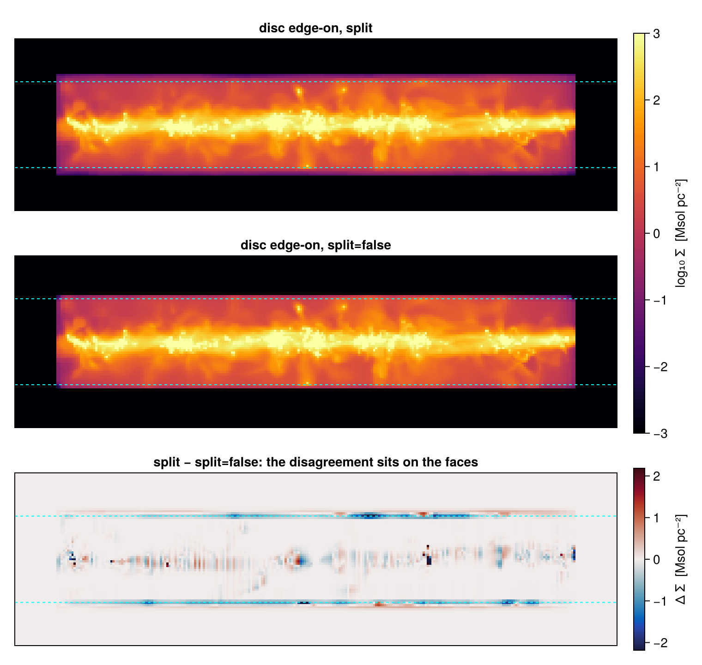
The ring. Dense gas often forms rings; this one lies between 6 and 10 kpc. cylindricalshell(6., 10., 2.) selects it within the ±2 kpc slab. A shell has two surfaces, so the centre test now makes errors on two edges at once. They can cancel or add up, which is why Step 4 called the centre test an estimate and not a bound. We also cut the inverse of the ring, everything except the ring, as a second check that region and inverse add up to the box:
ring_region = cylindricalshell(6., 10., 2.; center=[:bc], range_unit=:kpc)
ring = subregion(gas, ring_region, verbose=false)
ring_ctr = subregion(gas, ring_region; split=false, verbose=false)
m_ring = msum(ring, :Msol)
m_ringc = msum(ring_ctr, :Msol)
println("ring gas mass (6 < r < 10 kpc, |z| < 2 kpc):")
println(" split : ", round(m_ring, sigdigits=6), " Msol")
println(" split=false : ", round(m_ringc, sigdigits=6), " Msol (",
round(100*(m_ringc/m_ring - 1), sigdigits=3), " %, net of two rims' cancelling errors)")
ring_inv = subregion(gas, ring_region; inverse=true, verbose=false)
println("ring + inverse = box? ",
round((msum(ring, :Msol) + msum(ring_inv, :Msol))/msum(gas, :Msol), digits=10))
pr = proj(ring; xrange=[-11, 11], yrange=[-11, 11], pxsize=[0.1, :kpc])
pri = proj(ring_inv; xrange=[-11, 11], yrange=[-11, 11], zrange=[-2, 2], pxsize=[0.1, :kpc])
# ── figure code from here: panels, overlays, colorbars, no new Mera concepts ──
fig = Figure(size=(1180, 420))
ax1 = Axis(fig[1, 1], title="ring, split: two boundary surfaces")
show_sd!(ax1, pr, (-11, 11, -11, 11))
lines!(ax1, [4, 11, 11, 4, 4], [-3, -3, 3, 3, -3]; color=:cyan, linewidth=1)
ax2 = Axis(fig[1, 2], title="zoom: both rims on their circles")
show_sd!(ax2, pr, (4, 11, -3, 3))
ax3 = Axis(fig[1, 3], title="inverse=true: the gap it leaves (±2 kpc slab)")
show_sd!(ax3, pri, (-11, 11, -11, 11))
for ax in (ax1, ax2, ax3), r in (6., 10.)
arc!(ax, Point2f(0, 0), r, 0, 2π; color=:white, linewidth=1, linestyle=:dash)
end
sd_bar!(fig[1, 4])
figring gas mass (6 < r < 10 kpc, |z| < 2 kpc):
split : 8.03224e9 Msol
split=false : 8.02745e9 Msol (-0.0596 %, net of two rims' cancelling errors)
ring + inverse = box? 1.0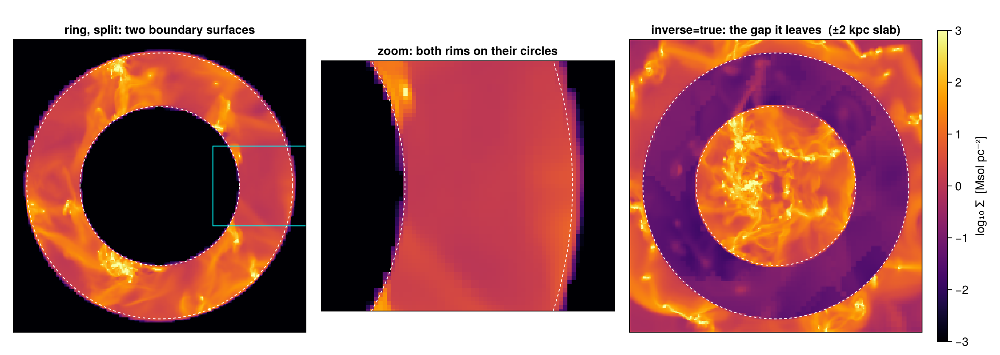
The envelope. Outside the disc lies a halo-like envelope, sphericalshell(10., 20.). Its inner surface is the same r = 10 kpc sphere as in Step 1 (hello). Shell and inner sphere share the boundary cells at r = 10 through complementary fractions, so their masses must add up to the mass of a plain 20 kpc sphere:
env_region = sphericalshell(10., 20.; center=[:bc], range_unit=:kpc)
env = subregion(gas, env_region, verbose=false)
sph20 = subregion(gas, sphere(20.), verbose=false)
m_env, m_hello, m_20 = msum(env, :Msol), msum(hello, :Msol), msum(sph20, :Msol)
println("envelope (10–20 kpc) : ", round(m_env, sigdigits=6), " Msol")
println("enclosed sphere (< 10) : ", round(m_hello, sigdigits=6), " Msol")
println("sum : ", round(m_env + m_hello, sigdigits=8), " Msol")
println("plain sphere(20) directly : ", round(m_20, sigdigits=8), " Msol")
sph20 = nothing
pe1 = proj(env; direction=:x, yrange=[-22, 22], zrange=[-22, 22], pxsize=[0.15, :kpc])
pe2 = proj(hello; direction=:x, yrange=[-22, 22], zrange=[-22, 22], pxsize=[0.15, :kpc])
# ── figure code from here: panels, overlays, colorbars, no new Mera concepts ──
fig = Figure(size=(880, 440))
Lv = (-22, 22, -22, 22)
ax1 = Axis(fig[1, 1], title="envelope shell, edge-on")
ax2 = Axis(fig[1, 2], title="enclosed sphere, edge-on: same frame")
show_sd!(ax1, pe1, Lv); show_sd!(ax2, pe2, Lv)
arc!(ax1, Point2f(0, 0), 10., 0, 2π; color=:white, linewidth=1, linestyle=:dash)
arc!(ax1, Point2f(0, 0), 20., 0, 2π; color=:white, linewidth=1, linestyle=:dash)
arc!(ax2, Point2f(0, 0), 10., 0, 2π; color=:white, linewidth=1, linestyle=:dash)
sd_bar!(fig[1, 3])
figenvelope (10–20 kpc) : 1.18046e10 Msol
enclosed sphere (< 10) : 1.82103e10 Msol
sum : 3.0014956e10 Msol
plain sphere(20) directly : 3.0014956e10 Msol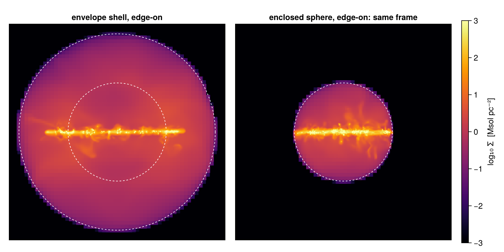
Both panels use the same frame (±22 kpc) and the same colour scale, so sizes and brightness can be compared directly. The dashed r = 10 kpc circle is in both panels: it is the outer wall of the sphere and the inner wall of the shell, and the printed sum shows its cut cells being shared between the two without loss. The envelope is not part of the disc budget below, because a spherical shell cannot tile with cylindrical zones; it is a separate line of the analysis.
The ledger. The four zones of the plan tile the disc: they have the same half-height, and their radial edges meet exactly. So their masses must add up to the disc mass:
inner_zone = cylindricalshell(4., 6., 2.; center=[:bc], range_unit=:kpc)
rim_zone = cylindricalshell(10., 12., 2.; center=[:bc], range_unit=:kpc)
m_inner = msum(subregion(gas, inner_zone, verbose=false), :Msol)
m_rim = msum(subregion(gas, rim_zone, verbose=false), :Msol)
zones = [("nucleus: cylinder(4, ±2 kpc)", m_nuc),
("inner : cylindricalshell(4–6, ±2 kpc)", m_inner),
("ring : cylindricalshell(6–10, ±2 kpc)", m_ring),
("rim : cylindricalshell(10–12, ±2 kpc)", m_rim)]
println(rpad("disc zone", 44), "gas mass [Msol]")
println("-"^60)
for (name, m) in zones
println(rpad(name, 44), round(m, sigdigits=5))
end
m_sum = sum(last.(zones))
println("-"^60)
println(rpad("sum of the four zones", 44), round(m_sum, sigdigits=8))
println(rpad("disc, measured directly (Step 2)", 44), round(m_disc, sigdigits=8))
println(rpad("relative residual", 44), round(m_sum/m_disc - 1, sigdigits=2))disc zone gas mass [Msol]
------------------------------------------------------------
nucleus: cylinder(4, ±2 kpc) 5.9373e9
inner : cylindricalshell(4–6, ±2 kpc) 3.9504e9
ring : cylindricalshell(6–10, ±2 kpc) 8.0322e9
rim : cylindricalshell(10–12, ±2 kpc) 4.9147e9
------------------------------------------------------------
sum of the four zones 2.2834625e10
disc, measured directly (Step 2) 2.2834625e10
relative residual 0.0The ledger balances to floating-point accuracy. The numbers were not tuned: with split regions, adding up is built in, because every cell on a shared edge gives its inside part to one zone and the rest to the neighbour.
The same budget for stars. A region knows nothing about cells. Applied to particles, subregion tests whether each particle position lies inside. So the same region values cut the stars, with no new geometry. We load the star particles here; Step 10 uses them again.
# star particles only: drop dark matter (birth time 0)
part = getparticles(info, verbose=false, show_progress=false)
pcols = propertynames(Mera.columns(part.data))
:birth in pcols && (part = construct_datatype(filter(p -> p.birth > 0., part.data), part))
println("star particles: ", length(part.data))
zones_all = [("nucleus", nucleus_region, m_nuc),
("inner", inner_zone, m_inner),
("ring", ring_region, m_ring),
("rim", rim_zone, m_rim)]
println(rpad("disc zone", 12), lpad("gas [Msol]", 14), lpad("stars [Msol]", 15))
println("-"^41)
ms_zones = Float64[]
for (name, reg, mgas) in zones_all
ms = msum(subregion(part, reg, verbose=false), :Msol)
push!(ms_zones, ms)
println(rpad(name, 12), lpad(string(round(mgas, sigdigits=4)), 14),
lpad(string(round(ms, sigdigits=4)), 15))
end
ms_disc = msum(subregion(part, disc_region, verbose=false), :Msol)
println("-"^41)
println(rpad("sum", 12), lpad(string(round(m_disc, sigdigits=6)), 14),
lpad(string(round(sum(ms_zones), sigdigits=6)), 15))
println(rpad("disc direct", 12), lpad(string(round(m_disc, sigdigits=6)), 14),
lpad(string(round(ms_disc, sigdigits=6)), 15))
p_gasd = proj(disc; xrange=[-13, 13], yrange=[-13, 13], pxsize=[0.1, :kpc])
stars_d = subregion(part, disc_region, verbose=false)
# the stars as a surface density on the same pixel grid as the gas
p_star = projection(stars_d, :sd, :Msol_pc2; direction=:z, center=[:bc], range_unit=:kpc,
xrange=[-13, 13], yrange=[-13, 13], pxsize=[0.2, :kpc], # coarser: less particle noise
verbose=false, show_progress=false)
# ── figure code from here: panels, overlays, colorbars, no new Mera concepts ──
# stellar Σ in an icy palette: opaque for the stars alone, and for the overlay a version that
# shows only the dense clusters and fades to transparent, so the gas stays visible
lsd = log10.(max.(p_star.maps[:sd], 1e-6))
vals = sort(filter(>(-6), vec(lsd)))
sthi = vals[round(Int, 0.995 * length(vals))]
STLIM = (sthi - 2.5, sthi) # stars alone: 2.5 decades
CLLIM = (sthi - 1.2, sthi) # overlay: the densest 1.2 decades
icy = cgrad([RGBf(0.0, 0.0, 0.0), RGBf(0.10, 0.20, 0.50), RGBf(0.40, 0.65, 1.0),
RGBf(0.85, 0.94, 1.0), RGBf(1.0, 1.0, 1.0)])
glow = cgrad([RGBAf(0.55, 0.78, 1.0, 0.0), RGBAf(0.60, 0.82, 1.0, 0.35),
RGBAf(0.85, 0.94, 1.0, 0.8), RGBAf(1.0, 1.0, 1.0, 1.0)])
xs = range(p_star.cextent[1]*kpc, p_star.cextent[2]*kpc; length=size(lsd, 1))
ys = range(p_star.cextent[3]*kpc, p_star.cextent[4]*kpc; length=size(lsd, 2))
fig = Figure(size=(1180, 520))
ax1 = Axis(fig[1, 1], title="stars in the disc region")
ax1.backgroundcolor = :black; ax1.aspect = DataAspect(); hidedecorations!(ax1)
heatmap!(ax1, xs, ys, lsd; colormap=icy, colorrange=STLIM)
limits!(ax1, -13, 13, -13, 13)
ax2 = Axis(fig[1, 2], title="gas with its densest star clusters on top")
show_sd!(ax2, p_gasd, (-13, 13, -13, 13))
heatmap!(ax2, xs, ys, lsd; colormap=glow, colorrange=CLLIM)
scalebar!(ax1, -12, -12.3, 5)
Colorbar(fig[1, 3]; colormap=icy, colorrange=STLIM, label="log₁₀ Σ★ [Msol pc⁻²]")
sd_bar!(fig[1, 4])
figstar particles: 508939
disc zone gas [Msol] stars [Msol]
-----------------------------------------
nucleus 5.937e9 1.873e9
inner 3.95e9 1.153e9
ring 8.032e9 1.661e9
rim 4.915e9 4.586e8
-----------------------------------------
sum 2.28346e10 5.14581e9
disc direct 2.28346e10 5.14581e9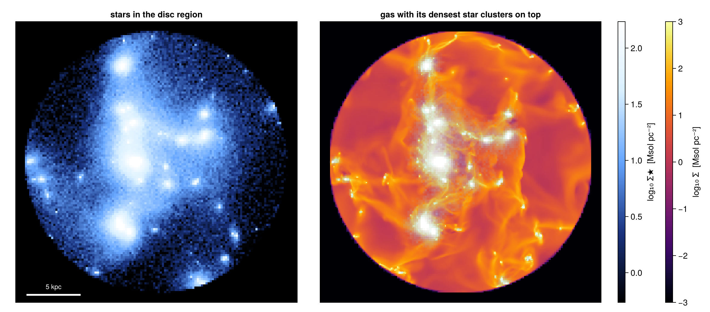
The stars tile the disc just like the gas. Particles are points, so each one belongs to exactly one zone, and the four zones add up to the disc by construction. The overlay shows why the ledger looks the way it does: the stars follow the dense gas they formed from, concentrated in the nucleus and along the clumps of the ring. The stars are drawn as a surface density on the same region as the gas, in their own colour scale. In the overlay only the densest star clusters are drawn, fading to transparent, so that the gas structure stays visible.
Step 9. Sharp edges for figures
"Exact" can mean two things.
Numbers (mass, volume, anything summed with :fraction) are exact to the sampling accuracy of Step 4. Making the boundary cells smaller would not improve them: the children of a cell carry the same values as the parent, and their inside parts add up to the inside part of the parent. The :fraction column already holds that information. So refine and refine_to are tools for maps, not for numbers.
Maps are a different matter. A projection spreads the reduced mass of each cut cell over the whole cell. The mass is right, but it is spread at the size of the cell, so a split edge looks soft. The rule is simple: mass can appear at most one boundary cell plus one pixel beyond the exact surface. Where the boundary crosses large cells, this soft band is wide. refine=k replaces only the boundary cells by their octree children, down to k levels, and each child gets its own fraction. The band then shrinks to cellsize/2ᵏ.
We measure both on the flat face of the disc, in a small slab around its edge, so that the refined cut stays cheap. Refining the whole boundary of a large region needs a lot of memory, so limit refine to the part you will draw:
slab = subregion(gas, :cuboid; xrange=[6., 14.], yrange=[-2., 2.], zrange=[-4., 4.],
center=[:bc], range_unit=:kpc, verbose=false) # a light working slab
d_s0 = subregion(slab, disc_region, verbose=false) # split, refine=0
d_ref = subregion(slab, disc_region; refine=2, verbose=false) # boundary subdivided 2×
pe_s0 = projection(d_s0, :sd, :Msol_pc2; direction=:y, center=[:bc], range_unit=:kpc,
xrange=[6., 14.], zrange=[-4., 4.], pxsize=[0.02, :kpc],
verbose=false, show_progress=false)
pe_r = projection(d_ref, :sd, :Msol_pc2; direction=:y, center=[:bc], range_unit=:kpc,
xrange=[6., 14.], zrange=[-4., 4.], pxsize=[0.02, :kpc],
verbose=false, show_progress=false)
zs = collect(range(pe_s0.cextent[3]*kpc, pe_s0.cextent[4]*kpc; length=size(pe_s0.maps[:sd], 2)))
fringe(p) = maximum(maximum(abs.(zs)[p.maps[:sd][i, :] .> 1e-2]; init=0.0)
for i in 1:size(p.maps[:sd], 1)) - 2.0 # kpc beyond the |z| = 2 face
fr = Mera.select(d_s0.data, :fraction)
csb = getvar(d_s0, :cellsize, :kpc)[0.0 .< fr .< 1.0] # boundary cells only
println("largest boundary cell in the cut : ", round(maximum(csb), digits=3), " kpc")
println("rendered fringe beyond |z| = 2 kpc :")
println(" refine=0 : ", round(fringe(pe_s0), digits=3), " kpc (bound: cell + pixel = ",
round(maximum(csb) + 0.02, digits=3), " kpc)")
println(" refine=2 : ", round(fringe(pe_r), digits=3), " kpc")
println("mass invariance, refine=2 / refine=0 : ",
round(msum(d_ref, :Msol) / msum(d_s0, :Msol), digits=5))
# ── figure code from here: panels, overlays, colorbars, no new Mera concepts ──
fig = Figure(size=(920, 440))
Lf = (6, 14, -4, 4)
ax1 = Axis(fig[1, 1], title="split, refine=0: fringe at the local cell size")
ax2 = Axis(fig[1, 2], title="split, refine=2: fringe ÷ 4")
show_sd!(ax1, pe_s0, Lf); show_sd!(ax2, pe_r, Lf)
for ax in (ax1, ax2), zpl in (-2., 2.)
lines!(ax, [6., 14.], [zpl, zpl]; color=:cyan, linewidth=1, linestyle=:dash)
end
sd_bar!(fig[1, 3])
figlargest boundary cell in the cut : 0.375 kpc
rendered fringe beyond |z| = 2 kpc :
refine=0 : 0.265 kpc (bound: cell + pixel = 0.395 kpc)
refine=2 : 0.064 kpc
mass invariance, refine=2 / refine=0 : 0.99966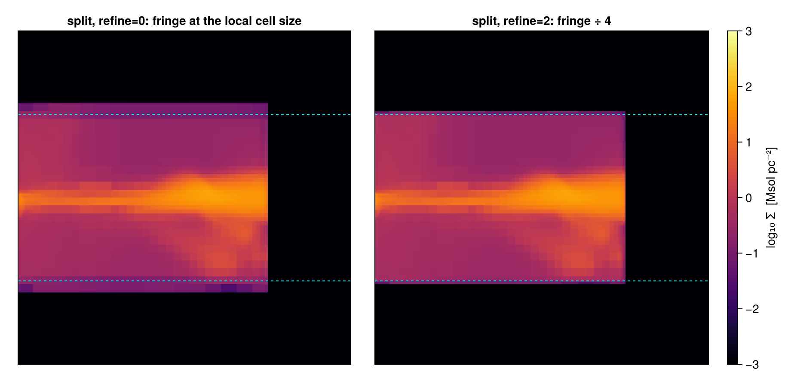
The soft band stays within its bound, and refine=2 makes it four times thinner, while the mass stays the same. The children get their own fractions, so changes in the fourth decimal place are expected. Use refine when a drawn boundary must be sharp, for figures or mock observations; plain split already gives the right numbers.
Matching the boundary to the map. You do not have to guess the depth. With refine_to=[length, unit], every cut cell picks its own depth, so that its children are no larger than the given length. Set it to the pxsize of your map, and the edge becomes sharp at the pixel scale, whatever the local AMR level:
d_px = subregion(slab, disc_region; refine_to=[0.05, :kpc], verbose=false) # ≈ the map scale
slab = nothing
pe_px = projection(d_px, :sd, :Msol_pc2; direction=:y, center=[:bc], range_unit=:kpc,
xrange=[6., 14.], zrange=[-4., 4.], pxsize=[0.02, :kpc],
verbose=false, show_progress=false)
frx = Mera.select(d_px.data, :fraction)
csx = getvar(d_px, :cellsize, :kpc)[0.0 .< frx .< 1.0]
println("largest straddling cell after refine_to : ", round(maximum(csx), digits=3),
" kpc (was ", round(maximum(csb), digits=3), " kpc)")
println("rendered fringe beyond |z| = 2 kpc : ", round(fringe(pe_px), digits=3), " kpc")
println("mass invariance vs refine=0 : ",
round(msum(d_px, :Msol) / msum(d_s0, :Msol), digits=5))largest straddling cell after refine_to : 0.047 kpc (was 0.375 kpc)
rendered fringe beyond |z| = 2 kpc : 0.024 kpc
mass invariance vs refine=0 : 0.99944Or simply clip the map. For a publication figure, the soft band can also be cut off at the exact surface, as long as the caption says so. The clip changes only the picture: the band holds a tiny part of the map mass, and the numbers you quote come from msum, which never depended on the map.
clipped = copy(pe_s0.maps[:sd])
zmask = abs.(zs) .> 2.0
clipped[:, zmask] .= 0.0 # DISPLAY clip only
frac_clipped = sum(pe_s0.maps[:sd][:, zmask]) / sum(pe_s0.maps[:sd])
println("map mass removed by the display clip : ",
round(100*frac_clipped, sigdigits=2), " % (cosmetic only: msum is untouched)")
# ── figure code from here: panels, overlays, colorbars, no new Mera concepts ──
fig = Figure(size=(920, 440))
ax1 = Axis(fig[1, 1], title="split edge: as rendered")
show_sd!(ax1, pe_s0, (6, 14, -4, 4))
ax2 = Axis(fig[1, 2], title="display-clipped at |z| = 2 (cosmetic)")
xs2 = range(pe_s0.cextent[1]*kpc, pe_s0.cextent[2]*kpc; length=size(clipped, 1))
heatmap!(ax2, xs2, zs, log10.(max.(clipped, 1e-3)); colormap=:inferno, colorrange=SDLIM)
ax2.aspect = DataAspect(); ax2.backgroundcolor = :black; hidedecorations!(ax2)
limits!(ax2, 6, 14, -4, 4)
for ax in (ax1, ax2), zpl in (-2., 2.)
lines!(ax, [6., 14.], [zpl, zpl]; color=:cyan, linewidth=1, linestyle=:dash)
end
sd_bar!(fig[1, 3])
figmap mass removed by the display clip : 0.45 % (cosmetic only: msum is untouched)Step 10. Regions with a purpose
A combination of shapes can be a small model: each shape below answers a question that a plain shape cannot, and each one is a single region, with fractions on every boundary. First, a disc with a "blister" sphere on its upper face and a "chimney" drilled through it, checked with the rule m(A ∖ C) = m(A) − m(A ∩ C):
blister = sphere(2.5; center=[30., :bc, 26.], range_unit=:kpc) # resting on the +z face
chimney = cylinder(1.2, 5.; center=[19., :bc, :bc], range_unit=:kpc)
capstone = (disc_region ∪ blister) \ chimney
cap = subregion(gas, capstone, verbose=false)
mAB = msum(subregion(gas, disc_region ∪ blister, verbose=false), :Msol)
mC = msum(subregion(gas, (disc_region ∪ blister) ∩ chimney, verbose=false), :Msol)
println("(disc ∪ blister) \\ chimney : ", round(msum(cap, :Msol), sigdigits=6), " Msol")
println("identity m(A∪B) − m((A∪B)∩C) = ", round(mAB - mC, sigdigits=8),
" vs ", round(msum(cap, :Msol), sigdigits=8))
pcf = proj(cap; xrange=[-14, 14], yrange=[-14, 14], zrange=[-2, 2], pxsize=[0.1, :kpc])
pce = proj(cap; direction=:y, yrange=[-1, 1], xrange=[-14, 14], zrange=[-4, 6], pxsize=[0.1, :kpc])
# ── figure code from here: panels, overlays, colorbars, no new Mera concepts ──
fig = Figure(size=(880, 440))
ax1 = Axis(fig[1, 1], title="face-on (±2 kpc slab): chimney pierces, blister hides")
show_sd!(ax1, pcf, (-14, 14, -14, 14))
ax2 = Axis(fig[1, 2], title="along y, ±1 kpc slab: blister on the face, chimney cut")
show_sd!(ax2, pce, (-14, 14, -4, 6))
sd_bar!(fig[1, 3])
fig(disc ∪ blister) \ chimney : 2.27205e10 Msol
identity m(A∪B) − m((A∪B)∩C) = 2.2720464e10 vs 2.2720464e10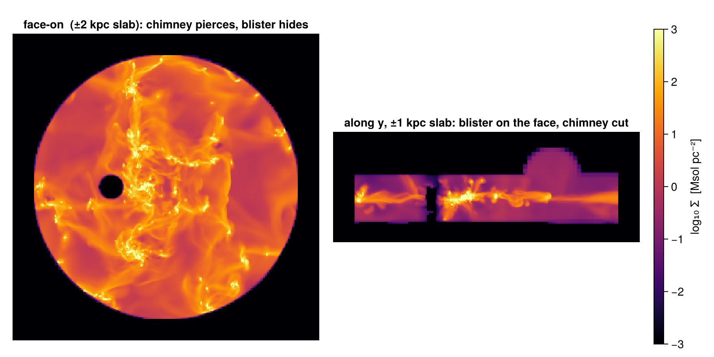
The rule holds, and the side view explains the top view: the blister adds gas only above the upper face, where the bright disc hides it from the top, while the chimney removes a full column (black from the top). Next, two shapes with astronomical names: chimneys, a disc with vertical channels, and a crescent, two offset spheres, the shape of a shock front or a bow. Each is shown in the views that make it clear:
chimneys_region = disc_region \ (cylinder(1.0, 5.; center=[18., :bc, :bc], range_unit=:kpc) ∪
cylinder(0.8, 5.; center=[26., 29., :bc], range_unit=:kpc) ∪
cylinder(1.2, 5.; center=[30., 20., :bc], range_unit=:kpc))
chim = subregion(gas, chimneys_region, verbose=false)
crescent_region = (sphere(5.; center=[28., :bc, :bc], range_unit=:kpc) \
sphere(4.5; center=[30.5, :bc, :bc], range_unit=:kpc)) ∩
cuboid(xrange=[-12, 12], yrange=[-12, 12], zrange=[-1.5, 1.5],
center=[:bc], range_unit=:kpc)
cres = subregion(gas, crescent_region, verbose=false)
println("chimneys: ", round(msum(chim, :Msol), sigdigits=5), " Msol crescent: ",
round(msum(cres, :Msol), sigdigits=5), " Msol")
pch_f = proj(chim; xrange=[-13, 13], yrange=[-13, 13], pxsize=[0.1, :kpc])
pch_e = proj(chim; direction=:y, yrange=[-0.9, 0.9], xrange=[-13, 13], zrange=[-3, 3], pxsize=[0.1, :kpc])
pcr_f = proj(cres; xrange=[-1, 10], yrange=[-6, 6], pxsize=[0.05, :kpc])
pcr_e = proj(cres; direction=:y, xrange=[-1, 10], zrange=[-3, 3], pxsize=[0.05, :kpc])
# ── figure code from here: panels, overlays, colorbars, no new Mera concepts ──
fig = Figure(size=(920, 800))
ax1 = Axis(fig[1, 1], title="chimneys, face-on: three drilled flow channels")
show_sd!(ax1, pch_f, (-13, 13, -13, 13))
ax2 = Axis(fig[1, 2], title="chimneys, edge-on (±0.9 kpc slab: the x = −6 channel)")
show_sd!(ax2, pch_e, (-13, 13, -3, 3))
ax3 = Axis(fig[2, 1], title="crescent, face-on: two offset spheres")
show_sd!(ax3, pcr_f, (-1, 10, -6, 6))
ax4 = Axis(fig[2, 2], title="crescent, edge-on")
show_sd!(ax4, pcr_e, (-1, 10, -3, 3))
sd_bar!(fig[:, 3])
figchimneys: 2.2548e10 Msol crescent: 2.1784e9 Msol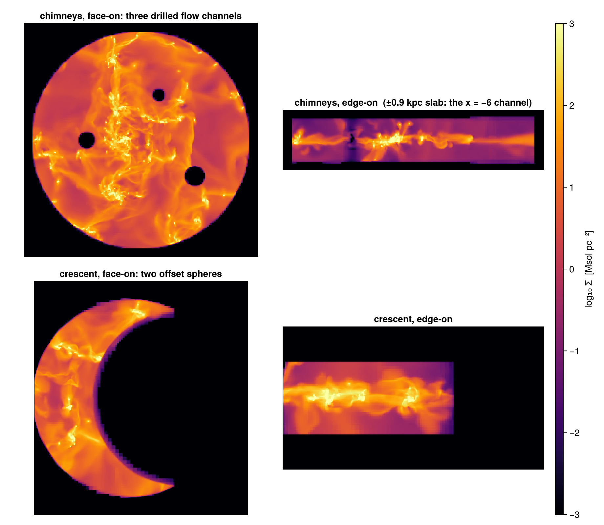
Holes placed by the data. Combinations become really useful when the data decide the geometry. Here we cut a hole around each of the three densest star-forming sites of the galaxy, found from the star particles of Step 8: the shape of gas cleared by feedback.
pxs = getvar(part, :x, :kpc) .- 24.; pys = getvar(part, :y, :kpc) .- 24.
pzs = getvar(part, :z, :kpc) .- 24.; pms = getvar(part, :mass, :Msol)
# densest star sites: 0.5-kpc 2-D mass grid in the 4 < r < 10 kpc disc annulus,
# greedy top-3 with ≥ 3 kpc separation
sel = (16. .< pxs.^2 .+ pys.^2 .< 100.) .& (abs.(pzs) .< 2.)
bins = Dict{Tuple{Int,Int},Float64}()
for (x, y, m) in zip(pxs[sel], pys[sel], pms[sel])
k = (floor(Int, x/0.5), floor(Int, y/0.5)); bins[k] = get(bins, k, 0.0) + m
end
sites = Tuple{Float64,Float64}[]
for (k, m) in sort(collect(bins); by=last, rev=true)
c = (0.5k[1] + 0.25, 0.5k[2] + 0.25)
all(hypot(c[1]-s[1], c[2]-s[2]) >= 3. for s in sites) && push!(sites, c)
length(sites) == 3 && break
end
println("cluster sites [kpc, centre-relative]: ", [round.(s, digits=1) for s in sites])
holes = reduce(∪, [sphere(1.3; center=[24. + s[1], 24. + s[2], :bc], range_unit=:kpc)
for s in sites])
cheese = subregion(gas, disc_region \ holes, verbose=false)
println("swiss-cheese disc: ", round(msum(cheese, :Msol), sigdigits=5), " Msol")
pw = proj(cheese; xrange=[-13, 13], yrange=[-13, 13], zrange=[-1.3, 1.3], pxsize=[0.1, :kpc])
# ── figure code from here: panels, overlays, colorbars, no new Mera concepts ──
fig = Figure(size=(640, 520))
ax = Axis(fig[1, 1], title="disc \\ three cluster-site spheres (±1.3 kpc slab)")
show_sd!(ax, pw, (-13, 13, -13, 13))
for s in sites
scatter!(ax, [s[1]], [s[2]]; marker=:xcross, color=:cyan, markersize=12)
end
scalebar!(ax, -12, -12.3, 5)
sd_bar!(fig[1, 2])
figcluster sites [kpc, centre-relative]: [(-3.2, 8.8), (-3.2, -5.8), (-2.2, 3.8)]
swiss-cheese disc: 1.5925e10 Msol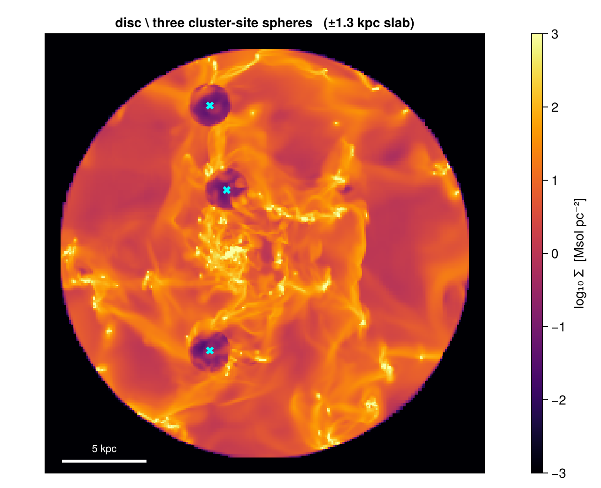
The crosses mark the sites the particles chose; the holes are where the gas was cut. The three spheres hold a few per cent of the disc volume but a much larger share of its mass, because star clusters sit on the densest gas. Two more shapes close the gallery: a plate cut into bows by four corner spheres, and a filament tube, three tilted cylinders joined along a path, the shape you would use to follow an accretion stream or a piece of a spiral arm:
plate = cuboid(xrange=[-7, 7], yrange=[-7, 7], zrange=[-1, 1], center=[:bc], range_unit=:kpc)
bows_region = plate \ (sphere(4.5; center=[17., 17., :bc], range_unit=:kpc) ∪
sphere(4.5; center=[31., 17., :bc], range_unit=:kpc) ∪
sphere(4.5; center=[17., 31., :bc], range_unit=:kpc) ∪
sphere(4.5; center=[31., 31., :bc], range_unit=:kpc))
bows = subregion(gas, bows_region, verbose=false)
waypoints = [(-9., -4.), (-2., 2.), (7., 6.)]
segs = AbstractRegion[]
for k in 1:length(waypoints)-1
a = [waypoints[k]..., 0.]; b = [waypoints[k+1]..., 0.]
d = b .- a; mid = (a .+ b) ./ 2 .+ 24.
push!(segs, cylinder(1.2, sqrt(sum(abs2, d))/2 + 0.3; axis=d, center=mid, range_unit=:kpc))
end
fil = subregion(gas, reduce(∪, segs), verbose=false)
println("bows: ", round(msum(bows, :Msol), sigdigits=5), " Msol filament tube: ",
round(msum(fil, :Msol), sigdigits=5), " Msol")
pbw = proj(bows; xrange=[-8, 8], yrange=[-8, 8], pxsize=[0.05, :kpc])
pfl = proj(fil; xrange=[-11, 9], yrange=[-6, 8], pxsize=[0.05, :kpc])
# ── figure code from here: panels, overlays, colorbars, no new Mera concepts ──
fig = Figure(size=(920, 440))
ax1 = Axis(fig[1, 1], title="plate \\ four corner spheres: bows")
show_sd!(ax1, pbw, (-8, 8, -8, 8))
ax2 = Axis(fig[1, 2], title="filament tube: three stitched tilted cylinders")
show_sd!(ax2, pfl, (-11, 9, -6, 8))
lines!(ax2, [w[1] for w in waypoints], [w[2] for w in waypoints];
color=:cyan, linewidth=1, linestyle=:dash)
sd_bar!(fig[1, 3])
figbows: 1.0791e10 Msol filament tube: 2.3211e9 Msol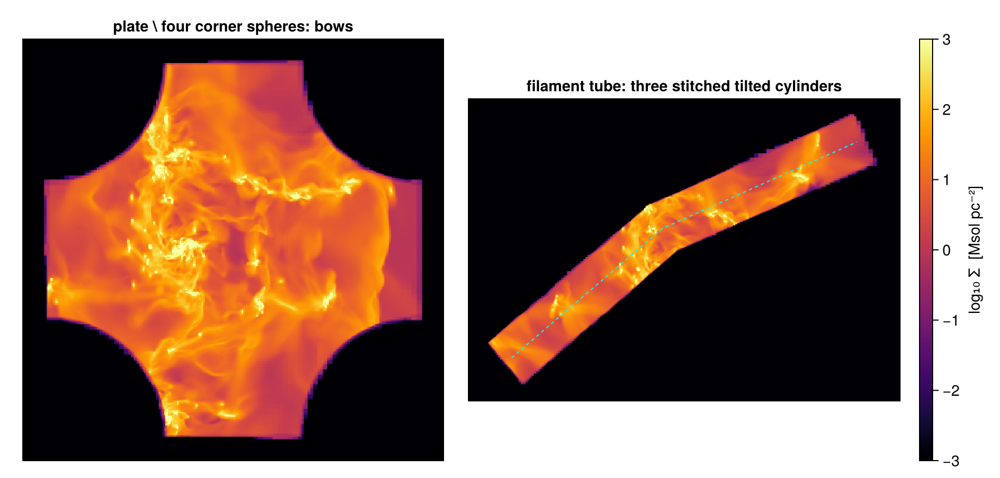
Every shape here is still a measurement: msum on any of them uses the fractions, adds up with its inverse, and works on particles as well as on cells.
Step 11. The classic API and periodic boxes
Before the region values existed, Mera selected regions with a shape symbol: subregion for the solid shapes and shellregion for the shells. This interface is still fully supported. It keeps whole cells, it is the quickest way to make an exploratory cut, and it keeps older scripts working.
| region value | classic call |
|---|---|
cuboid(xrange=…, yrange=…, zrange=…) | subregion(gas, :cuboid; xrange=…, yrange=…, zrange=…) |
sphere(R) | subregion(gas, :sphere; radius=R) |
cylinder(R, H) | subregion(gas, :cylinder; radius=R, height=H) (along z only) |
sphericalshell(rin, rout) | shellregion(gas, :sphere; radius=[rin, rout]) |
cylindricalshell(rin, rout, H) | shellregion(gas, :cylinder; radius=[rin, rout], height=H) |
What differs from the region values:
- Defaults.
center=[0., 0., 0.](the box corner) andrange_unit=:standard(code units). Passcenter=[:bc]andrange_unit=:kpcto match the region values. - Boundary cells.
cell=true(default) keeps every cell the surface touches;cell=falsekeeps cells whose centre is inside. There is no:fraction, so the classic call cannot split. - Periodic boxes.
periodic=truelets the region wrap around the box faces. Only the classic API does this; region values are always clipped at the faces. - Sizes. Radii and heights must be larger than zero.
shellregion takes the same keywords as subregion, with radius=[r_in, r_out]. Both radii must be larger than zero, and inverse=true selects the inside of r_in together with the outside of r_out. Without a shape, shellregion(gas) means :cylinder, so name the shape.
Mera.get_filtered_ranges returns the bounding ranges of a classic cut. Below, the classic cylinder and the classic spherical shell land above the split disc and the split envelope of Step 8, as whole cells must: cell=true keeps every cell that touches the region, on both surfaces of a shell. One consequence: classic regions that touch share the cells on their common surface, so nested classic shells do not add up. For a profile or a budget, use region values, or cell=false, which gives each cell to one shell only:
cub_c = subregion(gas, :cuboid; xrange=[-12, 12], yrange=[-12, 12], zrange=[-2, 2],
center=[:bc], range_unit=:kpc, verbose=false)
sph_c = subregion(gas, :sphere; radius=10., center=[13., :bc, :bc], range_unit=:kpc,
cell=false, verbose=false)
cyl_c = subregion(gas, :cylinder; radius=12., height=2., center=[:bc], range_unit=:kpc,
verbose=false)
shl_c = shellregion(gas, :sphere; radius=[10., 20.], center=[:bc], range_unit=:kpc,
verbose=false)
m_cylc = msum(cyl_c, :Msol)
println("classic cylinder (whole cells) : ", round(m_cylc, sigdigits=6), " Msol +",
round(100*(m_cylc/m_disc - 1), sigdigits=2),
" % vs split disc: whole boundary cells, as in Step 4")
m_shlc = msum(shl_c, :Msol)
println("classic shellregion (cell=true) : ", round(m_shlc, sigdigits=6), " Msol ",
round(100*(m_shlc/m_env - 1), sigdigits=2),
" % vs split envelope sphericalshell(10, 20), Step 8")
xr_c, yr_c, zr_c = Mera.get_filtered_ranges(cyl_c) # normalised [0,1] box fractions of the cut
println("cut spans x ∈ ", round.(xr_c .* (gas.boxlen * kpc), sigdigits=4), " kpc (absolute)")classic cylinder (whole cells) : 2.29023e10 Msol +0.3 % vs split disc: whole boundary cells, as in Step 4
classic shellregion (cell=true) : 1.19429e10 Msol 1.2 % vs split envelope sphericalshell(10, 20), Step 8
cut spans x ∈ [12.0, 36.0] kpc (absolute)Periodic boxes. In a periodic run, an object near a face continues on the opposite side. A region that crosses a face then needs periodic=true, otherwise the part outside the box is dropped. periodic=(x=true, y=true, z=false) wraps only some axes, and a cylinder wraps only in its two radial directions. Mera never wraps on its own: RAMSES does not store the boundary conditions in its output. info.boundaries reports what the namelist says, if it is available.
Our galaxy is an isolated disc, so wrapping is not physical here. The mechanics still show: a sphere on the box corner keeps an eighth of itself when clipped, and all of it when wrapped.
println("boundaries of this run: ", info.boundaries)
corner = (radius=3., center=[0., 0., 0.], range_unit=:kpc, verbose=false)
v_clip = sum(getvar(subregion(gas, :sphere; corner...), :volume, :kpc3))
v_wrap = sum(getvar(subregion(gas, :sphere; corner..., periodic=true), :volume, :kpc3))
println("volume, clipped at the faces : ", round(v_clip, sigdigits=4), " kpc³")
println("volume, wrapped (periodic) : ", round(v_wrap, sigdigits=4), " kpc³ ratio ",
round(v_wrap / v_clip, sigdigits=3))boundaries of this run: unknown
volume, clipped at the faces : 21.52 kpc³
volume, wrapped (periodic) : 172.1 kpc³ ratio 8.0The ratio is eight: a sphere on the corner reaches into all eight corners of the box, and the wrapped cut collects all eight pieces. Both volumes are larger than (4/3)π·3³ ≈ 113 kpc³, because the classic call keeps whole cells (Step 4). The page Periodic Boxes covers the other tools for periodic runs: :r_sphere_periodic, center_of_mass(…; periodic=true) and periodic_recenter.
Step 12. Large data: cut once, save, reload
This snapshot loads in seconds, but the same workflow works for snapshots that do not. Two steps, in this order.
Read only the columns you need. This whole page ran on gethydro(info, :rho, …): the AMR coordinates and one field are all a mass budget needs. On a large snapshot, this choice at read time decides whether the data fit into memory.
Then cut the window once. Cut the region you will study, save it with savedata, and start every later session from the small file. loaddata reads a whole data type before any spatial selection, so the cut must happen before saving, not after loading:
win = subregion(gas, :cuboid; xrange=[-13, 13], yrange=[-13, 13], zrange=[-3, 3],
center=[:bc], range_unit=:kpc, verbose=false)
tmpdir = mktempdir()
savedata(win, tmpdir; fmode=:write, verbose=false)
back = loaddata(400, tmpdir, :hydro, verbose=false)
fsz = sum(filesize, filter(endswith(".jld2"), readdir(tmpdir; join=true))) / 1024^2
println("working file : ", round(fsz, digits=1), " MB (", length(back.data), " cells)")
println("mass, window : ", round(msum(win, :Msol), sigdigits=8), " Msol")
println("mass, reloaded: ", round(msum(back, :Msol), sigdigits=8), " Msol")[Mera] Hint: output_00400.jld2.meta.json records where output_00400.jld2 came from.
readsidecar("output_00400.jld2") shows it; sidecar(false) stops writing them.
(shown once per session; verbose(false) silences Mera's messages)
working file : 147.5 MB (17957496 cells)
mass, window : 2.7966433e10 Msol
mass, reloaded: 2.7966433e10 MsolThe round trip loses nothing, and everything on this page (regions, algebra, budgets, refine) works on the reloaded object. On very large data, release each working object when you are done with it (obj = nothing; GC.gc()) and keep only one in memory at a time.
Which mode when
- Exploring? Classic whole-cell cuts (
cell=true) are the cheapest and show all gas near the region. Their mass is an upper bound. Neighbouring whole-cell regions share their edge cells, so they do not add up (Step 11). - Fewest cells? The centre test (
split=false, or classiccell=false) keeps fewer cells and usually lands close to the split value, but with no guaranteed sign (Step 8, the ring). Treat it as an estimate. - Measuring a mass, a volume or a profile? Region values with the default
split=true. The:fractioncolumn makesmsum,getvar(:mass),getvar(:volume)and projections aware of the boundary, and touching regions add up exactly. - Drawing a cut for a figure? Add
refine=k, orrefine_to=thepxsizeof the map (Step 9), limited to the part you draw. - Periodic run, region across a face? The classic API with
periodic=true(Step 11).
Cost. Cells that cannot touch the region are skipped by a bounding-box test, so a small cut costs roughly its own volume, not the whole data set. Splitting adds one fraction per boundary cell; inner cells cost nothing extra. A larger nsub makes the fractions of curved surfaces more precise and costs time in proportion. refine=k creates up to 8ᵏ children per boundary cell: cheap on a slab, expensive on the full surface of a large region.
Check your budget. Region plus inverse is the whole box, and touching regions tile their union. Both are one-line msum checks. Use them in real analyses too.
Summary
- A region is a value:
cuboid,cylinder,sphere,sphericalshell,cylindricalshell.subregion(gas, region)cuts it out and returns the same type asgas. - Region values default to the box centre and kpc. The cylinder height is a half-height.
- Boundary cells are split by default: each gets a
:fraction, and mass and volume use it. Whole cells over-count, the centre test can miss in either direction, and the split value is the one to quote. - Shells:
sphericalshellandcylindricalshellwithsubregion, or the classicshellregion. inverse=trueor!regiongives the outside;∩ ∪ \ !and@regionbuild any shape;axis=tilts cylinders and cylindrical shells. Touching regions add up exactly.refineandrefine_tosharpen the drawn edge; they do not change the numbers.- The same region cuts particles. The classic API keeps whole cells and is the one that can wrap around a periodic box (
periodic=true).
Continue with:
- Subregions cheatsheet: everything on one page.
- Masking & Filtering: select by value (density, temperature, any derived quantity) and combine it with these regions.
- Off-axis projection: look along the axis of a tilted region.
The same steps on the other data types: Gravity · Particles · Clumps · Sinks